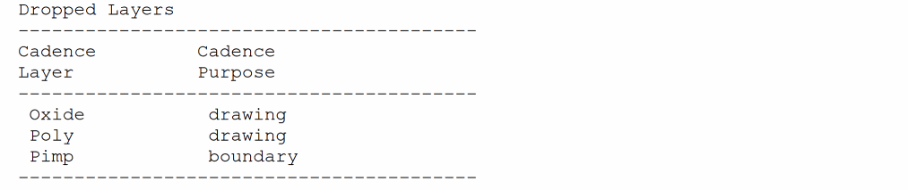

3
Design Translation Using XOasis Translator
This chapter contains the following sections:
- Overview
- Running the XOasis Translator
-
Design Translation During XOasis In
- XOasis In Use Model
- Multithreading in XOasis In
- XOasis In Form
- XOasis In More Options Form
- XOasis In Editor Forms
- XOasis In Option Names in GUI and Template File
- Seeding the XOasis In GUI using oasisInKeys SKILL List and .cdsinit File
- OASIS to OpenAccess Mapping
- Mapping OASIS Records to OpenAccess Objects
- Design Translation During XOasis Out
- Layer Mapping in XOasis
- Automatic Layer Mapping in XOasis
- Using Map Files During Translation
- Sample Log File
- Sample Summary File
- Sample Template File
- Performance Guidelines for XOasis
- Chip Finishing Flow
Overview
OASIS format defines an encapsulation and interchange format for hierarchical integrated circuit mask layout information. This format also provides specifications to interchange mask data between systems such as EDA software, mask writing tools, and mask inspection repair tools. The OASIS format:
- Supports two-dimensional figure arrays
- Supports primitive shapes like vertical and horizontal trapezoid, square, and circle
- Uses variable-width integers (N bytes)
- Allows relative (Dx,Dy) coordinates in both step/repeat and figures
- Supports variable string length, including cell names
- Supports N-vertexes polygon
- Uses IEEE standard 64-bit floating point numbers
- Supports layer name and purpose information
- Supports embedded comments
- Supports embedded data compression
It consists of two modules, XOasis In and XOasis Out. XOasis In translates designs in the OASIS format to the OpenAccess (OA) database. XOasis Out translates designs from the OpenAccess database to the OASIS format.
This chapter provides information about:
- Running the XOasis translator
- XOasis In options
- XOasis Out options
- Mapping files.
- Sample log file, summary file, and the template file.
- Preserving OpenAccess objects during a cycle of XOasis Out and XOasis In.
(IC6.1.8 only) Translation Behavior for Advanced Nodes Commands and Data
If during translation, XOasis encounters advanced nodes options, such as enableColoring, they are ignored and translation continues. This is true when the options are specified both through the option template file or in a command-line executable.
Additionally. if you translate a design with coloring information, the translation stops and an error is displayed in the CIW. This is because coloring is not supported in IC6.1.8. However, if the technology file contains colored data, but the design does not contain any coloring information, translation is performed but a warning message is displayed in the CIW.
Running the XOasis Translator
You can translate design files by running the XOasis translator either from the Textual User Interface (TUI) or from the Graphical User Interface (GUI). In this section, you will learn about the methods for running the XOasis translator by using TUI and GUI. Additionally, you will also read about the method for invoking help and setting the environment variables.
Running XOasis In and XOasis Out Using TUI
You can run XOasis In and XOasis Out in the batch mode by using the oasisin and oasisout commands. Use any of the two methods described below to run these commands.
-
Specify the options as command-line arguments.
$oasisin -
option1value1-option2value2 -option3value3$oasisout -
where:option1value1-option2value2 -option3value3
Example 3-1
Running XOasis In by specifying the library, oasisFile, and logFile options as command-line arguments.
$oasisin -librarylib1-oasisFilein.oasis -logFile oasisin.log
-
Write the options and their values in a text file and then specify the text file as an argument to
oasisinandoasisout.$oasisin -
templateFiletextfileName$oasisout -
where:templateFiletextfileName
To view the template file, see Sample Template File.
Example 3-2 Running XOasis Out by writing options and their values in the text file template.txt.
$oasisout -templateFiletemplate.txt
The contents of text file appear in the format shown below:
option1 value1
option2 value2
For Boolean options, do not specify any value. When you specify a boolean option, its value is accepted as true. Otherwise, its value is false.
You can combine these two methods by specifying some options on the command line and other options in the template file. This method is a combination of the above two methods.
If you specify the same option in the template file and the command line, the option specified in the command line takes precedence.
$oasisin -option1value1-option2value2-templateFiletextfileName
$oasisout -option1value1-option2value2-templateFile textfileName
Example 3-3
Running XOasis In by specifying library, oasisFile, and templateFile as command-line arguments.
$oasisin -librarylib1-oasisFilein.oasis-templateFiletemplate.txt
In the above example, the oasisFile and libName options are taken from the command line and all other options are taken from template.txt.
Using Help
You can use the -h or -help option to display the description of the supported XOasis In or XOasis Out options. This information is displayed even when you type oasisin or oasisout without specifying any option.
Example 3-4 Using help during XOasis In and XOasis Out
oasisin [-h|-help]
oasisout [-h|-help]
Running XOasis In and XOasis Out from the GUI
You can run XOasis In by choosing the File–Import–OASIS command from the CIW. Similarly, you can run XOasis Out by choosing the File–Export–OASIS command from the CIW.
Preserving GUI History in XOasis
The -guihistory command lets you use the last preserved GUI history at command line. These values can be overwritten at command line, if needed.
GUI history is saved only when the SKILL environment variable is set to t. By default, the environment variable is set to nil, which means that the command is disabled.
GUI history values are used across Virtuoso sessions. Therefore, when xoasEnableGUIHistory is enabled, the XOasis form also reads these values.
These values are also given the highest precedence. Therefore, if both pre-seeding and GUI history values are available, the XOasis form will use the values from the GUI history.
Design Translation During XOasis In
XOasis In Use Model
XOasis In converts design data in the OASIS format to designs in the OpenAccess database. The inputs to the XOasis In process are XOasis In options, optional mapping files, user-defined OASIS files, and technology file information. The log and summary files and the OpenAccess libraries are generated after the design translation.
The following table provides generic information about the files used during XOasis In.
For details on the map files, see Design Translation During XOasis In.
Multithreading in XOasis In
XOasis In uses multithreading to improve performance during translation. For multithreading, a tool can use as many threads as there are available computing units on the system.
XOasis evaluates the machine configuration and then applies the best value to be used for multithreading based on available CPU cores.
Multithreading works differently when:
- Import OASIS to Virtual Memory Mode is Enabled
- Import OASIS to Virtual Memory Mode is Disabled or XOasis is Run from Command Line
Import OASIS to Virtual Memory Mode is Enabled
When
You can also manually set number of cores to be used for multithreading with the environment variable. For example, the following sets number of cores to be used for multithreading in VM mode to 4.
setenv XOAS_IN_VM_NT 4
If you set the value as 0 or 1, it implies no cores will be used and multithreading will not take place.
Import OASIS to Virtual Memory Mode is Disabled or XOasis is Run from Command Line
When
XOasis In Form
The main XOasis In form comprises mandatory options that are essential to run the translator including OASIS File, Library, Top Cell, View, and Template File. The form also comprises a few other most commonly used options, such as Layer Map and Object Map.
The following sections on the main form can be expanded to view additional options:
Discussed below are the options available on the XOasis In form.
OASIS File
Use the OASIS File field to specify the name of the OASIS file that is to be translated to OpenAccess. Alternatively, click the File Browser button to select the OASIS file. This field supports filenames that are relative to the run directory or are absolute.
You can either specify the absolute or relative path for the OASIS file. If the absolute path is specified, the OASIS file is picked up from the specified directory irrespective of the value specified for the run directory. However, in case of the relative path, the OASIS file is searched in the specified path relative to the run directory. By default, the run directory is the current directory.
Command-line option: oasisFile
Library
Use the Library field to specify the target library where data is to be translated. The library name should be a logical name and follow the naming conventions supported by OpenAccess. You can also select an existing library as the target library from the drop-down list.
If the library does not exist, a new library is created in the run directory. If the target library already exists, data is translated to the library.
Top Cell
Use the Top Cell field to specify the name of the cell at the top of the hierarchy that you want to translate to OpenAccess. The OASIS format supports hierarchical designs. So, the Top Cell option determines the node from where the design is to be translated.
Example 3-5 Translating cells by using the Top Cell option
Consider the hierarchical structure below where A, B, C, D, E, F, and G are cell names. You want to translate these cells using the Top Level Cell field.

When C is specified as the top cell in the Top Level Cell field, cells C, D, E, and F are translated.
View
Use the View field to specify view names that are created in the target library during translation. If you specify a cellview name in the cell name map file or SKILL file, then the view name specified in these files takes precedence over the name specified in the XOasis In form.
Example 3-6 Translating cells C, D, E, and F into the layout1 view

In the figure above, if C is specified as the top cell and layout1 as the view name, then the structures C, D, E, and F are translated with layout1 as the view name.
Template File
Use the Template File field to specify an existing template file. You can also click the File Browser button to select the template file. When this file is loaded, the XOasis In form is updated with the option settings specified in it. If the correct template file is loaded, then all the GUI fields in the form are reset.
Click the Save button to save the current option settings to the template file.
Command-line option: templateFile
Import OASIS to Virtual Memory
Select the Import OASIS to Virtual Memory check box to read an OASIS file and create an OpenAccess design in the virtual memory. You can also specify the number of CPU cores that should be used for multithreading during translation. For more information, see
Additionally, this option is selected, Disable Info Message IDs and Disable Warning Message IDs fields are populated with *, to indicate that all the information (INFO) and warning (WARNING) messages are disabled for CIW and the Oasis In log file. If you manually change the value of these fields, or if you remove * from them, then if Oasis In to Virtual Memory check box is selected, information and warning messages, if there are any, are not displayed in the CIW. They are logged in the log file.
For more information, refer to the Chip Finishing Flow section.
Technology
Expand Technology to specify a technology library, file, database that you would like to use during translation.
Attach Tech Library
Use the Attach Tech Library drop-down list box to attach an existing technology file to the target library. The Attach Tech Library drop-down list box lists all the technology libraries specified in the cds.lib file.
If you select this option, XOasis In attaches the technology file from the library specified in the Attach Tech Library field instead of creating a new one. This option takes precedence over the Load ASCII Tech File option.
If the target library already contains a technology file, then the Attach Tech Library option is ignored. The attached technology file is treated as read-only by XOasis In and its contents remain unaltered during XOasis In.
Default value: attachTechFileofLib
Load ASCII Tech File
Use the Load ASCII Tech File field to create or merge a technology file in the target library. Alternatively, click the File Browser button to select the technology file. The technology file is created when the ASCII technology file is compiled during XOasis In. If the technology file already exists in the target library, then the technology file that has been created by compiling the ASCII technology file is merged with the existing one.
The ASCII technology file is searched with respect to the run directory if the complete path of the file is not specified.
When a target library is attached to another technology library, XOasis In ignores this option and generates a warning message. If the target library is not attached to any other technology library, a technology file is created or merged with the technology file created from the compilation of the ASCII technology file.
If the absolute path to the current directory exists, then when you click the File Browser button, current directory opens in the File Browser. Otherwise, run directory opens.
Command-line option: loadTechFile
Tech Refs
Use the Tech Refs field to specify the technology databases that will be referenced by the technology database created by XOasis In. You can specify multiple technology databases in this field. Conflicts in the technology graph, mean that the technology database created by XOasis In and the referenced technology databases that you have specified in this field have conflicts. In this scenario, the tool stops and generates an error to specify that XOasis In has detected a conflict in the technology database graph.
Layer Map
Use the Layer Map field to specify an existing layer map file. You can also click the File Browser button to select the layer map file. Next, click the Editor button to view the specified file in editor.
To create new layer mapping records or load a new layer map file, leave the Layer Map field blank, and click the Editor button to display the XOasis In Layer Map File Editor Form.
Expand Layer Map to view additional options.
Translate Unmapped LPPs
Use the Translate Unmapped LPP option to map unmapped layers. This option works only when a different user-defined layer mapping, layer map file or SKILL function, has been specified. When you enable Translate Unmapped LPP, first, the user-specified layer mapping is applied, and then, automatic layer mapping is performed to translate unmapped layers. For more information, see Layer Mapping when Translate Unmapped LPP is Selected.
Command-line option: translateUnmappedLPP
Use Automatic Layer Mapping
Use the Use Automatic Layer Mapping option to map layers automatically. This option works only if no layer mapping has been specified. Otherwise, this option is ignored and layers are mapped with the specified mapping. For more information about automatic layer mapping, see Automatic Layer Mapping in XOasis.
Object Map
Object mapping file maps the object type and sub type to the Oasis layer-datatype pair. The object mapping file determines which OpenAccess object should be translated as a shape on which Oasis layer-datatype.
Use the Object Map field to specify an existing object map file. You can also click the File Browser button to select the object map file. Next, click the Editor button to view the specified file in editor.
Command-line option: objectMap
To create new object mapping records or load a new object map file, leave the Object Map field blank, click the Editor button to display the XOasis In Object Map File Editor Form.
Expand Object Map to view the additional option.
Ignore Object Properties
Use the Ignore Object Properties option to ignore property information stored in OASIS used to recreate OA objects during XOasis In.
Property information is written by using an object-map during XOASIS Out to translate objects as shapes in OASIS. XOasis Out, by default would write special properties to these shapes which are used by XOasis In to automatically recreate objects from these shapes. Ignoring these properties means that these objects, which are shapes with special properties in OASIS, will now be translated as shapes in OA.
Command-line option: ignoreObjectProp
Log File
Use the Log File field to specify log file to be used during XOasis In translation.
Use the Log File field to specify a name for the log file. Alternatively, click the Browse button to select the log file. A log file records the translation process steps and the messages generated by XOasis In. After the translation is completed, this file is displayed in a separate read-only text window. However, if the log file size is greater than 200 MB, a message will be displayed mentioning the path to the log file.
The path specified for the log file can be absolute or relative to the run directory. To view the log file, see Sample Log File.
Expand Log File to view additional options.
Summary File
Use the Summary File field to specify a file that writes the summary of the translated design. If you do not specify a filename in the Summary File field before translation, the summary file will not be generated.
The path specified for the summary file can be absolute or relative to the run directory. To view the summary file, see Sample Summary File.
Command-line option: summaryFile
Generate Detailed Log and Summary Files
Use the Generate Detailed Log and Summary Files option to include additional summary information in the XOasis In log file and XOasis In summary file.
With this option is enabled, following sections with additional information are added to the XOasis In summary file:
-
Individual Cell Statistics: Cellview summary added to this section is sorted alphabetically according to library/cell/view.
The bBox column is also added. This column lists the boundary boxes of the translated cells in the following format:
((
Here, lowerLeft and upperRight are the lower-left and upper-right coordinates of the boundary box.lowerLeft.x lowerLeft.y) (upperRight.x upperRight.y))
-
Statistics of Layers: Layer summary added to this section is sorted in the same order in which layer-purpose pairs are defined in the technology file or the layer pellet.
-
Top Cells: This section lists the referenced top cells
-
Missing Cells: This section lists the cells that are referenced but are missing from the input OASIS file and the referenced library, if it is specified.
-
Dropped Layers: This section lists the
OasisLayer:OasisDataTypepair for which no mapping is found. Shapes on these layer-purpose pairs are not translated.
-
Individual Advanced Objects Statistics: This section lists the shapes translated as Place and Route objects during XOasis In. It lists the object type, sub-type, Oasis Layer, Oasis name, layer name (for layerBlockage), datatype, and the count of the objects translated.
Coloring Mode (ICADVM20.1 Only)
To enable color mapping during XOasis In, select the Enable check box for the Coloring Mode option.
Command-line option: enableColoring
-
Attach Tech Library (
attachTechFileOfLib) -
Load ASCII Tech File (
loadTechFile) -
Tech Refs (
techRef)
-
Attach Tech Library (
Technology can be either attached to the existing target library or the target library has its own technology. Currently, coloring of the vias is not supported in the case of the Via Map File option.
-enableColoring option is not considered during translation.Translate
Use the Translate button to translate the OASIS file to OpenAccess. If you select the Translate button without selecting Load File, the input data will be validated and translated directly.
Apply
Use the Apply button to translate the XOasis file to OpenAccess. After the translation is completed, the XOasis In form does not disappear.
Progress Bar
The Progress bar is displayed, when you click the Translate or Apply button. It moves left to right to indicate that the translation is in progress stops when the translation is completed. You can also click the Stop button to stop the process.
Cancel
Use the Cancel button to exit the XOasis In form.
Reset All Fields
Use the Reset All Fields button to set the GUI fields to their default values, which are displayed when the tool in invoked.
More Options
Use the More Options button to display the XOasis In More Options form which features additional options that you can set before starting XOasis In translation.
Help
Use the Help button to invoke online help.
XOasis In More Options Form
Search Field
Use the Search field to quickly look for options you want to access or the options related to the value you type in this field. For example, if you type cell, only the options related to cell will be visible in the options tree. The related options will also be highlighted in the options pane.
Options Tree
The Options tree enables you to access the following option panes where you can perform additional settings.
- Mapping Options
- Geometry Options
- Messages Options
- Report Options
- General: Storage Options
- General: Others Options
Options Panes
Options panes comprise different commands related to the option currently selected in the tree.
OK
Click OK to save your current settings for the More Options form and exit.
Apply
Click Apply to save your settings on the More Options form. When you click Apply, the form is not closed.
Defaults
Click Defaults to set default values for all options in the More Options form.
Cancel
Click Cancel to close the More Options form without saving any changes.
This section covers the option panes that you can access from the Options tree in the XOasis In More Options form.
Mapping Options
Use the Mapping options pane to specify additional mapping files to be used during XOasis In translation.
This section describes options on the Mapping options pane.
Cell Map File Name
Use the Cell Map File Name field to specify an existing cell map file. You can also click the File Browser button to select the cell map file. Next, click the Editor button to view the specified file in editor.
To create new cell mapping records or load a new cell map file, leave the Cell Map File field blank, and click the Editor button to display the XOasis In Cell Map File Editor Form.
Wild Card in Cell Map
Use the Wild Card in Cell Map option to use wild cards in XOasis In. The option supports the characters '*' and '?' as wild cards and ‘\’ as the escape character. If you don't use this option, wild card will be considered as a special character during translation.
Consider the following example:
Here, when you use XOasisIn, the created cellview will be INV_NAND. if the structure in the GDS is INV*_NAND_ver1. In this example, in INV\*_*_ver1, the first ‘*’ is treated as special character and the second ‘*’ as the wild card.
If you don't use Wild Card in Cell Map, the default behavior will be same as a normal cell map.
Command-line option: wildCardInCellMap
Cell Case Sensitivity
The Cell Case Sensitivity option determines whether XOasis In changes the case of letters in cell names. XOasis In ignores this option when cell mapping is done. You can map cell names in a cell name map table or in a SKILL file.
The preserve option translates cell names without changing the case. For example, the name Obj1 remains Obj1.
The upper option translates all cell names to uppercase. For example, the name Obj1 becomes OBJ1.
The lower option translates all cell names to lowercase. For example, the name Obj1 becomes obj1.
Ref Lib File Name
Use the Ref Lib File Name field to specify an existing reference library name. You can also click the File Browser button to select the reference library. Next, click the Editor button to view the specified file in editor.
Command-line option: refLibList
To select a library name from the list of available libraries to be used as a reference libraries, leave the Ref Lib File Name field blank, and click the Editor button to display the XOasis In Reference Library File Editor Form.
Use All Libraries as Ref Lib
Use the Use All Libraries as Ref Lib option to select all available libraries as reference libraries. The refLibList option exports only instances to cellviews from these reference libraries. It does not export any cellviews from them.
If you invoke XOasis In from the command line, you can write the list of reference libraries in a text file and provide this file as the value of the refLibList option. If you want to consider all the libraries defined in the cds.lib file as reference libraries, use the OASIS_CDS_LIB keyword. You can provide this keyword as a value of the reflibList option from the command line or write it in a text file containing the list of libraries.
Prop Map File Name
Use the Prop Map File Name field to specify an existing properties mapping file. You can also click the File Browser button to select the properties mapping file. Next, click the Editor button to view the specified file in editor.
To create new properties mapping records or load a new properties mapping file, leave the Prop Map File Name field blank, and click the Editor button to display the XOasis In Property Map File Editor Form.
Use Automatic Mapping
Select the Use Automatic Mapping option to enable automatic property mapping. XOasisIn now supports the XOAS_AUTO_PM keyword. You can assign this keyword to the -propMap option for automatic property mapping.
Default value: Deselected
Replace [] with <>
The Replace [] with <> option replaces the character [ with < and ] with > in text records during the translation from the Oasis file to a DFII library.
Command-line option: replaceBusBitChar
Geometry Options
This section describes options on the Geometry options pane.
Convert Arrays to Scalar Instances
The Convert Arrays to Scalar Instances option translates OASIS arrays to ROWS * COLS scalar instances in OpenAccess. If this option is not selected, each element in AREF translates to a single array in OpenAccess.
Command-line option: arrayInstToScalar
Convert Paths to Pathsegs
Use the Convert Paths to Pathsegs field to convert the two-point orthogonal paths in the input OASIS file to pathSeg objects in the OA database.
Command-line option: convertPathToPathSeg
All non-orthogonal paths (PATH) in the input OASIS file are imported as OA path objects even when the Convert Paths to Pathsegs option is used during XOasis In.
Skip Undefined LPPs
The Skip Undefined LPPs option ignores the layer-purpose pairs that are not existing in the technology file. This option is selected only when you use XOasis In on an existing target library in a design. When a user selects the Skip Undefined LPPs option, a warning message will be displayed mentioning that the OASIS layer datatype pair is mapped to the layer-purpose pair, which does not exist in the technology library.
The Skip Undefined LPPs option is ignored when a new target library is created. This is because there is no pre-existing technology information. If the technology file of the target library is write-protected, then this option is automatically selected during XOasis In.
The Skip Undefined LPPs option is considered when you run XOasis In, in a new library using an ASCII technology file. In this case, any undefined layer-purpose pairs will not be created in the OA technology for the target library.
Default value: Deselected
Command-line option: skipUndefinedLPP
Keep OASIS Cells
The Keep OASIS cells option provides a way of referring first to the information pertaining to a particular cell in the OASIS file instead of a reference library.
If the Keep OASIS cells option is not used, the OASIS file will not be searched while creating instances. If
Command-line option: keepOasisCells
Ignore Zero Width Paths
Use the Ignore Zero Width Paths option to ignore the translation of the zero-width path. If you select this option, zero-width paths are ignored, otherwise they are translated as lines.
Command-line option: ignoreZeroWidthPath
Snap to Grid
The Snap to Grid option adjusts the coordinates of geometric objects to coincide with the grid resolution. However, this option can shift data from the original XOasis grid resulting in a loss of precision.
Command-line option: snapToGrid
Text Font
Use the Text Font field to select the default text font. The available font options are stick, euroStyle, gothic, math, roman, script, fixed, swedish, and milSpec.
Text Orientation
Use the Text Orientation field to select the default text orientation.
Command-line option: textOrientation
Text Height
Use the Text Height field to control the height of text labels. Default value is 1. For example, you can specify the text height as two or half so that it will double or reduce the label height to half.
Command-line option: textHeight
DB Units Per User Units
Use the DB Units per User Units field to specify the database units per user units, which should be used during translation. This option allows you to scale the target design library as per the new DBUPerUU.
DBUPerUU value specified at the option.Valid values: Greater than or equal to 1
Design Scale Factor
Use the Design Scale Factor option to scale an imported design by the factor set here. This option will accept any positive floating value. The scale option will not have any impact on existing options or behavior because scaling is done internally. It will work in addition to the settings in the DBUPerUU option.
For example, consider DBUPerUU is 1000 and OASIS polygon size is 3000 db units (user units). If you run the command strmin -scale 4 -dbuPerUU 2000, the resultant polygon size will be calculated as below:
3000 x (2000/1000) x 4 = 24000 db units (user units)
Messages Options
This section describes options on the Messages options pane.
Disable Info Message IDs
Use the Disable Info Message IDs field to specify list of information message IDs that you do not want to print. You can also specify message IDs of dependent tools in this field.
The information message IDs should be specified in numeric format and they should not be prefixed by any other character. For example, 3075. The list of information message IDs must be separated by a comma or white space.
Alternatively, click the Message Browser button to display the
Disable Warning Message IDs
Use the Disable Warning Message IDs field to specify warning message IDs that you do not want to print. You can also specify message IDs of dependent tools in this field.
The warning message IDs should be specified in numeric format and they should not be prefixed by any other character. For example, 3075. The list of warning message IDs should be separated by a comma or white space.
Alternatively, click the Message Browser button to display the
Convert Info Message IDs to Warnings
Use the Convert Info Message IDs to Warnings field to specify list of information message IDs that you want to convert to warning messages. You can also specify message IDs of dependent tools in this field.
The information message IDs should be specified in numeric format and they should not be prefixed by any other character. For example, 4374. The list of information message IDs must be separated by a comma or white space.
Command-line option: infoToWarn
Alternatively, click the Message Browser button to display the
Convert Warning Message IDs to Errors
Use the Convert Warning Message IDs to Errors field to specify the IDs of warning messages that you want to convert to error messages. You can also specify message IDs of dependent tools in this field.
The warning message IDs should be specified in numeric format and they should not be prefixed by any other character. For example, 3075. The list of warning message IDs should be separated by a comma or white space.
Command-line option: WarnToErr
Alternatively, click the Message Browser button to display the
XOasis In Messages Forms
This sections describes the following XOasis In Message forms that are displayed when you click the respective Message Browser button.
- XOasis In Info Messages Form to Disable Info Messages
- XOasis In Warning Messages Form to Disable Warning Messages
- XOasis In Info Messages Form to Convert Info Messages to Warnings
- XOasis In Warning Messages Form to Convert Warnings to Errors
XOasis In Info Messages Form to Disable Info Messages
This section describes options on the XOasis In Info Messages form that is displayed when you click the Message Browser button for the Disable Info Message IDs option.
Select check boxes for the XOasis information messages that you want to disable.
Use the Other IDs field to specify information message IDs of other dependent tools.
Click the Select All check box to select all message IDs.
Use the Cancel button to exit the XOasis In Info Messages form without saving any changes.
XOasis In Warning Messages Form to Disable Warning Messages
This section describes options on the XOasis In Warning Messages form that is displayed when you click the Message Browser button for the Disable Warning Message IDs option.
Select check boxes of the XOasis warning messages listed in this form.
Use the Other IDs field to specify warning message IDs of other dependent tools.
Click the Select All check box to select all message IDs.
Use the Cancel button to exit the XOasis In Warning Messages form without saving any changes.
XOasis In Info Messages Form to Convert Info Messages to Warnings
This section describes options on the XOasis In Info Messages form that is displayed when you click the Message Browser button for the Convert Info Message IDs to Warnings option.
Select check boxes of the XOasis information messages listed in this form.
Use the Other IDs field to specify information message IDs of other dependent tools.
Use the Cancel button to exit the XOasis In Info Messages form without saving any changes.
XOasis In Warning Messages Form to Convert Warnings to Errors
This section describes options on the XOasis In Warning Messages form that is displayed when you click the Message Browser button for the Convert Warning Message IDs to Errors option.
Select check boxes of the XOasis information messages listed in this form.
Use the Other IDs field to specify information message IDs of other dependent tools.
Use the Cancel button to exit the XOasis In Info Messages form without saving any changes.
Report Options
This section describes options on the Report options pane.
Run Directory
The Run Directory field accepts the default directory for all the files you specify in the XOasis In form. The run directory will be created automatically, provided you have the appropriate permission, if it does not exist during XOasis In or XOasis Out. If you want to read from or write to a file that is not in the run directory, type the absolute file path in the field.
Default value: Current working directory
Report Bad Polygons and Paths
The Report Bad Polygons and Path option provides a way for reporting self intersecting paths; coincident or collinear paths; paths that have less then two coordinates; path with an invalid begin and end extension value; an open polygon; coincident or collinear polygons; and a polygon with self-intersecting points. However, using this option impacts performance.
If an OASIS file has PATH records with PATHTYPE1 that has a circular path end, then according to the OASIS format, these PATH records are translated as paths with octagonal extensions. If there is an issue, it should be corrected at the source of the OASIS file.
Command-line option: checkPolygon
General: Storage Options
This section describes options on the General: Storage options pane.
Write Mode
Use the Write Mode field to select the write mode during the translation of the existing cells. The following options are available:
Select the overwrite option to overwrite the existing cells in the target library during translation.
Select the noOverwrite option to prevent existing cells in the target library from being overwritten during translation.
Select the append option to append data to an existing database during translation. If this option is selected, in case the OASIS file contains shapes or instances that already exist in the database, they will be appended to the existing database. Therefore, the database will have duplicates of these shapes and instances.
Select the rename option to rename the duplicate cells in the target library during translation.
Command-line option: writeMode
Overwrite Root Cells
This option is available only when Write Mode is set to rename. When this option is used, all the root cells (un-instantiated cells in the OASIS file) replace the duplicate cells in the user-defined top-cell hierarchy; and the cells present in the hierarchy of the root cell are renamed.
Command-line option: overwriteRootCells
Detect Overflow
Use the Detect Overflow option to detect overflow cellviews during translation.
OpenAccess limits the number of individual object types (like shapes) in a cellview. By default, the XOasis In translator fails to translate an OASIS file to OpenAccess if the maximum capacity of a cellview is reached for an individual object type. The Detect Overflow option enables XOasis In to translate an OASIS file even if the number of individual objects is more than the maximum capacity of a single cellview. In this scenario, overflow cellviews are created on reaching the maximum capacity of a cellview, with the remaining objects translated in the overflow cell. An instance of this overflow cell is then placed inside the main cell exceeding the maximum capacity.
Overflow cells are created with the name of the original cell suffixed with the value of the
Command-line option: detectOverflow
Overflow Cell Name Suffix
Use the Overflow Cell Name Suffix to specify the string to be appended to the name of the overflow cells.
Command-line option: overflowCellNameSuffix
Overflow View Name
Use the Overflow View Name to specify a view name for the overflow cells.
Default value: If no value is specified, value of the
Command-line option: overflowViewName
Example 3-7 Multiple OASIS files; Single XOasis In
In the above example, there are multiple definitions for cells across OASIS files.
If the Write Mode is set to overwrite, then the expected XOasis In output is the shown below.
Example 3-8 XOasis In output: Write mode is overwrite

If the Write Mode is set to noOverwrite, then the expected XOasis In output is the shown below.
Example 3-9 XOasis In output: Write mode is noOverwrite

If the Write Mode is set to append, then the expected XOasis In output is the shown below.
Example 3-10 XOasis In output: Write mode is append
If the Write Mode is set to rename, then the expected XOasis In output is the shown below.
Example 3-11 XOasis In output: Write mode is rename

If the Write Mode is set to rename and the Overwrite Root Cells option is selected, then the expected XOasis In output is the shown below.
Example 3-12 XOasis In output: Write mode (rename) and Overwrite Root Cells
t and Write mode to overwrite or append, then when you try to perform XOasis In translation to an existing library, a message will be displayed to warn you that cells in the target library will be overwritten or appended to in this process. Enable Incremental Import
Use the Enable Incremental Import option to import multiple OASIS files into the same design library. The two methods to import the OASIS files are:
- Specify all the OASIS files in one XOasis In translation.
- Specify a subset of OASIS files at a time. For this, multiple XOasis In translations are needed to import the OASIS files. This is called incremental import mode. For incremental import mode, select the Enable Incremental Import option during the first XOasis In translation cycle.
XOasis In creates a temporary file to maintain incremental import data at the following location:
.cadence/geoTrans/.incrementalImport
A limitation for this option is that one directory can handle only one incremental import. However, you can perform XOasis In translation, with the Enable Incremental Import option deselected, in the same directory.
Command-line option: enableIncrementalImport
Enable File Locking
Use the Enable File Locking option to enable file locking during XOasis In. This option allows other applications to access the target library when XOasis In is running. The additional synchronization overhead required for shared access by multiple applications increases the translation time.
Command-line option: enableLocking
Compress
Use the Compress option to enable compression during XOasis In.
Default value: Deselected
Compression Level
Use the Compression Level option to specify the level of compression to be applied during XOasis In. You can specify a value from 1 to 9 for this option. Value 1 signifies the lowest level of compression and 9 signifies the highest level of compression. If you do not specify any value in the Compression Level option, value 1 is considered as the compression level during XOasis In. This option is enabled only if the Compress option is selected.
Command-line option: compressLevel
Maximum Cells in Target Lib
Use the Maximum Cells in Target Lib field to specify the maximum number of cells that you want to include in the target library. If the number of cells are more than the cells you have specified, then the other library will be created with the same name followed by “_1”. For example, if the number of cells in the target library, trglib, exceeds the limit of the value specified in the Maximum Cells in Target Lib field, then the new library will be created as, trglib_1. The number following the filename will be incremented by 1 depending on the number of libraries that are created. For example, another library will be created as, trglib_2.
Command-line option: maxCellsInTargetLib
General: Others Options
This section describes the options on the General: Others option pane.
User SKILL File
Use the User SKILL File field to specify a file that consists of user-defined SKILL routines. You can specify mapping mechanism for cell names, layers, and fonts through the use of programming routines written in SKILL in the SKILL file.
In order to load all the required SKILL procedures in a single file, use only one SKILL file during translation. The SKILL file is searched with respect to the run directory if the complete path of the SKILL file is not specified.
UserSkillFile will always be loaded before the libInit.il file. The libInit.il file is usually present in the technology file.
Command-line option: userSkillFile
Do Not Detect Via
Select the Do Not Detect Via option to disable via detection during translation.
In case, there is no via map file and the Do Not Detect Via option is not specified, the tool evaluates the system and if it is possible, performs via detection.This process creates standard and custom vias during XOasis In.
If you do not have a via map file, and the option Do Not Detect Via is selected, then the translator will produce multiple OpenAccess designs to represent a via. This affects the performance of XOasis In and other applications, which work on these OpenAccess designs adversely.
(ICADVM20.1 Only) Via detection is a color-aware process. Therefore, when the Coloring Mode option is enabled, color information on vias is appropriately set during translation.
Command-line option: noDetectVias
Enable Negative Extension for Via Detection
Use the Enable Negative Extension for Via Detection option to detect vias with negative metal extension. Vias with negative extension have cut shapes that are partially overlapping with metal shapes.
Command-line option: enableNegativeViaExt
Via Map File
Use the Via Map File field to specify a via map file. The via map file maps the Structure names from the OASIS file to the corresponding viaDef names in the input technology library. For more information on the via map file, see Via Map File.
Exclude Map To Via File
Use the Exclude Map To Via File field to specify a file name that contains the list of STRUCTs. In XOasis In, vias are detected by default. Therefore, when the Exclude Map To Via File option is specified, XOasis In does not convert the STRUCT names as Viadefs.
The via exclusion file contains one OASIS structure per line. This option supports the use of following wildcards:
|
Works as the escape character. Use this when you want a wildcard character to be treated as a normal character. |
# List of structures to be excluded from via mapping
M1M2Wire # Do not map M1M2Wire to a via
M2M3Wire* # Do not map cells starting with M2M3Wire to a via
Command-line option: excludeMapToVia
Merge Purposes to Drawing
Use the Merge Purposes to Drawing option to map all OASIS datatypes to the purpose drawing during XOasis In. This option is applicable only if XOasis In does not find a layer map file or a SKILL file. For more information about automatic layer mapping, see Layer Map File.
Default value: Deselected
Command-line option: mergeUndefPurposToDrawing
Translate Entire Hierarchy
Use the Translate Entire Hierarchy option to translate the entire design hierarchy.
Translation Depth
Use the Translation Depth option to specify the depth of the design hierarchy during XOasis In. XOasis In stops the translation process at the hierarchy level indicated by this option. The hierarchy depth value applies to all the top cells getting translated to OpenAccess. This option is enabled only if the Translate Entire Hierarchy option is deselected.
Command-line option: hierDepth
Example 3-13 Translating cells C, D, and F by using the Translation Depth option

The hierarchy above shows cells A, B, C, D, E, F, G, and H placed at different levels. When cell C is selected as the top cell and the hierarchy depth is selected as 1, then the cells C, D, and F are translated.
An instance of E is created in the structure D, but its structure information is ignored. Cell H is ignored and is not translated to OpenAccess.
Preserve Pin Attributes
Use the Preserve Pin Attributes field to preserve pin connectivity information.
Command-line option: preservePinAtt
Text Case Sensitivity
Use the Text Case Sensitivity option to specify if XOasis In will change the casing of text labels. The following options are available:
-
preserve - The preserve option translates text labels without changing case. For example, the label
Obj1remainsObj1. -
upper - The upper option translates the text label to uppercase. For example, the label
Obj1becomesOBJ1. -
lower - The lower option translates the text labels to lowercase. For example, the label
Obj1becomesobj1.
Show Completion Message Box
The Show Completion Message Box check box lets you to display the Oasis In translation complete message box with the number of errors and warnings after the translation is completed. The state of this check box depends on the value of the xoasShowCompletionMsgBox SKILL variable, which is t by default.
XOasis In Editor Forms
This section discusses the following XOasis In Editor Forms:
- XOasis In Layer Map File Editor Form
- XOasis In Object Map File Editor Form
- XOasis In Cell Map File Editor Form
- XOasis In Reference Library File Editor Form
- XOasis In Property Map File Editor Form
XOasis In Layer Map File Editor Form
This section describes options on the XOasis In Layer Map File Editor form that is displayed when you click the Editor button for the Layer Map option.
Add Row
Click the Add Row button to create a new layer mapping record.
For more information on columns in a layer mapping record, see Layer Map File.
Use the OASIS Layer field to specify the OASIS layer name that you want to map to the OpenAccess layer.
Use the OASIS Datatype field to specify the OASIS datatype that you want to translate to OpenAccess purpose.
Use the Layer Name field to specify the OpenAccess layer name to which you want to map the OASIS layer.
Use the Purpose Name field to specify the OpenAccess purpose name to which you want to map the OASIS datatype.
Use the Material Type field to specify the OpenAccess material type to which you want to map the OASIS datatype. This will be used to create the layer, if it does not exist. To hide Material Type column, right-click on the column heading row and clear the Material Type check box.
Use the Mask Number field to specify the OpenAccess mask number to which you want to map the OASIS layer. To hide the Mask Number column, right-click on the column heading row and clear the Mask Number check box.
Photo Mask Color (ICADVM20.1 Only)
Use the Photo Mask Color field to specify the photo mask color of the layer.
Use the Color State field to specify the color state of the layer.
OASIS File field. In case you want to add or modify the values in any of these fields then you need to double-click in the cells.Delete Row
Use the Delete Row button to delete an existing layer mapping record.
Load
Use the Load button to load a new layer map file. You can specify multiple layer name map files by using the Load file option iteratively. A layer map file maps OASIS layer number and OASIS data type pairs to OpenAccess layer name and purpose name pairs. If you specify an invalid filename, a warning message is generated and the filename is ignored.
The path specified for the layer map file can be absolute or relative to the run directory. For more information, see Layer Map File.
Save As and Exit
Use the Save As and Exit button to the save the mapping information in a new file and exit the layer map file editor.
Save and Exit
Use the Save and Exit button to the save the mapping information in the current file and exit the layer map file editor.
Cancel
Use the Cancel button to exit the XOasis In Layer Map File Editor form without saving any changes.
XOasis In Object Map File Editor Form
This section describes options on the XOasis In Object Map File Editor form that is displayed when you click the Editor button for the Object Map option.
Add Row
Click the Add Row button to create a new object mapping record.
For more information on columns in an object mapping record, see Object Map File.
Use the Object Name field to select the name of the object to be mapped.
Use the Sub Object Name field to select the name of the sub object to be mapped.
The Layer Name field is displayed only when the Object Name is specified as layerBlockage. However, N/A will be displayed in the Layer Name field in case of any other Object Name.
Use the OASIS Layer field to specify the Oasis layer number for the OpenAccess object. By default, the Oasis layer number is specified as 0.
Use the OASIS Type field to specify the Oasis datatype for the OpenAccess object. By default, the Oasis datatype is specified as 0.
Photo Mask Color (ICADVM20.1 Only)
Use the Photo Mask Color field to specify the photo mask color of the layer.
The Photo Mask Color field is visible only if Coloring Mode is enabled.
Delete Row
Use the Delete Row button to delete an existing object mapping record.
Load
Use the Load button to load the object map file. An object map file is used for preserving OpenAccess objects. If you specify an invalid file name, a warning message is generated and the file name is ignored.
The path specified for the object map file can be absolute or relative to the run directory. For more information, see Object Map File.
Save As and Exit
Use the Save As and Exit button to save the object mapping information in a new file and exit the object map file editor.
Save and Exit
Use the Save and Exit button to save the object mapping information in the current file and exit the object map file editor.
Cancel
Use the Cancel button to exit the XOasis In Object Map File Editor form without saving any changes.
XOasis In Cell Map File Editor Form
This section describes options on the XOasis In Cell Map File Editor form that is displayed when you click the Editor button for the Cell Map File Name option.
Add Row
Click the Add Row button to create a new cell mapping record.
For more information on columns in a cell mapping record, see Cell Name Map File.
Use the OASIS Name field to specify a name for the OASIS file that you want to translate to OpenAccess.
Use the Library field to select the library that you want to translate to OpenAccess. The Library drop-down list lists all the available libraries defined in cds.lib as well as XOASIS_TARGET_LIB.
Use the Cell field to specify the cell name that you want to translate to OpenAccess.
Use the View field to specify the view name of the specified cell that you want to translate to OpenAccess.
Delete Row
Use the Delete Row button to delete an existing mapping record.
Load
Use the Load button to load a new cell name map file. A cell name map file contains a table that maps structure names in the OASIS file to cellview names in the OpenAccess database.
The path specified for the cell name map file can be absolute or relative to the run directory.
Save As and Exit
Use the Save As and Exit button to save the object mapping information in a new file and exit the cell map file editor.
Save and Exit
Use the Save and Exit button to save the object mapping information in the current file and exit the cell map file editor.
Cancel
Use the Cancel button to exit the XOasis In Cell Map File Editor form without saving any changes.
XOasis In Reference Library File Editor Form
This section describes options on the XOasis In Reference Library File Editor form that is displayed when you click the Editor button for the Ref Lib File Name option.
Add
Use the Add button to add libraries to the Reference Libraries field.
The Reference Libraries field is used to specify logical library names that you want to consider as reference libraries. The libraries specified in this field should be present in the cds.lib file. Otherwise, they are not considered as reference libraries.
During XOasis In, when you search for master cellviews of instances, reference libraries are searched in the same order as that specified in the Reference Libraries field. If any of the specified libraries do not exist in the cds.lib file, an error message is displayed.
Remove
Use the Remove button to remove libraries from the Reference Libraries field.
Move Up
Use the Move Up button to move up selected reference libraries in the Reference Libraries list on the right. This helps you arrange reference libraries as per your order of preference.
Move Down
Use the Move Down button to move down selected reference libraries in the Reference Libraries list on the right. This helps you arrange reference libraries as per your order of preference.
Load
Use the Load button to load the text file containing the list of reference libraries. When you specify the text file, the path and the text filename are displayed in the blank field above the Load button.
Save As and Exit
Use the Save As and Exit button to save the reference library information in a new file and exit the reference library map file editor.
Save and Exit
Use the Save and Exit button to save the reference library information in the current file and exit the reference library map file editor.
Cancel
Use the Cancel button to exit the XOasis In Reference Library File Editor form without saving any changes.
XOasis In Property Map File Editor Form
This section describes options on the XOasis In Property Map File Editor form that is displayed when you click the Editor button for the Prop Map File Name option.
Add Row
Click Add Row button to create a new property mapping record.
For more information on columns in a property mapping record, see Property Map File.
Use the Object Type option to select an object that you want to translate to OpenAccess.
Use the Property Name field to specify the property name that you want to map to OpenAccess.
Delete Row
Click the Delete Row button to delete an existing property mapping record.
Load
Use the Load button to load the property map file. A property map file is used for preserving properties associated with OpenAccess objects. If you specify an invalid file name, a warning message is generated and the file name is ignored.
The path specified for the property map file can be absolute or relative to the run directory. For more information, see Property Map File.
Save As and Exit
Use the Save As and Exit button to save the property map information in a new file and exit the property map file editor.
Save and Exit
Use the Save and Exit button to save the property map information in the current file and exit the property map file editor.
Cancel
Use the Cancel button to exit the XOasis In Property Map File Editor form without saving any changes.
XOasis In Option Names in GUI and Template File
The following table provides a list of all the XOasis In GUI options and their corresponding names in the template file. To view the sample template file, see XOasis In Template File.
| Name in Template File | XOasis In GUI Options |
|---|---|
$TECH_DIR, $CDS_WORKAREA, $USER variables in a template file and the variables are correctly resolved by XOasis.
You can also access and input values in XOasis In GUI using SKILL commands. To populate values in the XOasis In form, you need to enter the
virtualMemory and showCompletionMsgBox are valid for command line executable or batch process.Seeding the XOasis In GUI using oasisInKeys SKILL List and .cdsinit File
You can define a set of option values that will be loaded into the Virtuoso® XOasis In form in a oasisInKeys SKILL list or in the .cdsinit file. You can load a SKILL list into the Virtuoso® XOasis In form when you use Import – OASIS. The system loads the .cdsinit file automatically when you start the software. A sample oasisInKeys SKILL list is shown below:
;***************************************************************
; Copyright (C) 2013 - 2018 *
; Cadence Design Systems Inc. All Rights Reserved. *
;***************************************************************
;
;**************************************************************
;
; filename : oasisIn.il
;
;**************************************************************
oasisInKeys=list(nil
'hierDepth "32767" ;- (0-32767) - Hierarchy Depth Limit
'maxCellsInTargetLib "30000" ;- Maximum Cells in Target Library
'textOrient "R0" ;- R0 | R90 | R180 | R270 | MY |, MYR90 MX | MXR90 - Default Text Orientation
'arrayInstToScalar nil ;- Convert AREF to Scalar Instances
'attachTechFileOfLib "" ;- Attach Techfile of Library
'case "preserve" ;- preserve | upper | lower - Case Sensitivity
'cellMap "" ;- Cell Map File Name
'checkPolygon nil ;- Report Bad Polygons
'compress nil ;- Allow libraries to be compressed
'compressLevel "1" ;- Defines the compression level to use (default: 1)
'convertPathToPathSeg nil ;- Convert Two Point Path(s) to PathSeg(s)
'detectOverflow nil ;- Enable overflow cellview creation on reaching maximum limit of shapes in a cellview
'dbuPerUU "1000" ;- DB Units Per User Units
'enableLocking nil ;- Enable File Locking
'enableColoring nil ;- Enable Coloring Support
'enableIncrementalImport nil ;- Enable incremetal import of multiple OASIS Files
'enableNegativeViaExt nil ;- Enable Negative Extension for Via Detection
'excludeMapToVia "" ;- Via exclusion Data file
'ignoreZeroWidthPath nil ;- Ignore Zero Width Path(s)
'ignoreObjectProp nil ;- Ignore Object Properties
'infoToWarn "" ;- Treat the Specified Info Messgaes Ids as the Warnings
'keepOasisCells nil ;- Keep Oasis File Cells
'layerMap "" ;- Layer Map File Name
'library "oasisInLib" ;- Library Name
'loadTechFile "" ;- ASCII Technology File Name
'logFile "oasisIn.log" ;- Log File Name
'mergeUndefPurposToDrawing nil ;- Merges Undefined Purposes to "drawing" Purpose
'noDetectVias nil ;- Do Not Detect possible viaDefs from Oasis File and create vias
'noInfo "" ;- Do not Print the Specified Info Messages Ids
'noWarn "" ;- Do not Print the Specified Warning Messages Ids
'oasisFile "test.oasis" ;- Oasis File Name
'objectMap "" ;- Object Mapping File Name
'overflowCellNameSuffix "_xoasOverflow" ;- Cell name suffix of overflow cellviews
'overflowViewName "layout" ;- View name of overflow cellviews
'overwriteRootCells nil ;- Overwrite top Cells in case write mode is rename
'preservePinAtt nil ;- Preserve Pin Connectivity Information
'propMap "" ;- Property Map File Name
'refLibList "" ;- Rerferrence Library List File
'replaceBusBitChar nil ;- Replace "[]" With "<>"
'runDir "." ;- Run Directory
'scale "1.00000" ;- Design Scaling Factor
'showCompletionMsgBox t ;- Show the Completion Message Box
'skipUndefinedLPP nil ;- Skip Creating Undefined Layer-Purpose Pair in Technology
'snapToGrid nil ;- Snap XY to Grid Resolution
'summaryFile "" ;- Summary File Name
'techRefs "" ;- Ordered List of Technology Libraries
'textCase "preserve" ;- preserve | upper | lower - Text Case Sensitivity
'textFont "euroStyle" ;- euroStyle | gothic | math | roman | script | stick | fixed | swedish | milSpec
'textHeight "1.00000" ;- Text Height (+ve value only)
'topCell "" ;- Top Cell(s) to Translate
'translateUnmappedLPP nil ;- Allow undefined LPP to be translated by incrementally mapping LPP using layerMap file, SKILL hook piLayerMap, and automatic layer mapping
'userSkillFile "" ;- Users' Skill File Name
'verbose nil ;- Generate detailed information in the log and summary files
'viaMap "" ;- Via Map File Name
'view "layout" ;- View Name(s) to Translate
'virtualMemory nil ;- Do OASIS In into Virtual Memory
'warnToErr "" ;- Treat the Specified Warning Messgaes Ids as the Errors
'wildCardInCellMap nil ;- Wild Card in Cell Map
'writeMode "overwrite" ;- Write mode of existing cells
)
To prepare a SKILL list for XOasis Out, see Seeding the XOasis Out GUI using oasisOutKeys SKILL List and .cdsinit File.
Handling Non-Manhattan Angle Rotation and Magnification
When the source OASIS file contains SREF/AREF with either non-Manhattan angle rotation or non-default magnification, xOasis In translates and generates variant of the original master cell. The instance in the translated OA design refers to the variant, instead of the original master cell.
Each variant has the same content as the original cell, except that the content is either rotated or magnified, or both. If original cell contains instances or vias, variants are generated recursively for their masters. The cell name of the variant is different from the original master cell name. The variant name follows the below convention:
variantName = originalCellName[_m<mag>][_a<angle>][_v<version>]
Here, the mag and angle are floating-point values written in the printf format of .15g. The suffix, version is appended to the name if a cellview with the same name already exists in the library. In case of such a conflict, versions will be generated regardless of the value of -writeMode option.
Additionally, AREF with non-Manhattan angle rotation is translated as an array of scalar instances. These instances refer to the rotated (and maybe further scaled) variant. Accordingly, the array itself is rotated and scaled.
Finally, when the via-detection option is enabled, REFs that either point to any-angle or magnified master, or both, are not detected as vias. The -detectVias option has no effect on such rotated or magnified variants.
OASIS to OpenAccess Mapping
This section describes the mapping among OASIS and OpenAccess constructs. The XOasis In translator performs semantic checking while processing the records contained in an OASIS file.
Terminology Mapping
The following table includes information about Terminology mappings between OASIS and OpenAccess constructs:
| OASIS Construct | OpenAccess Equivalent |
Modal Variables
The OASIS standard defines Modal variables for compaction purposes. The XOasis translator supports Modal variables implicitly. For more information on Modal variables, refer to the OASIS documentation.
Mapping OASIS Records to OpenAccess Objects
The following table includes information about mappings between OASIS records and OpenAccess objects:
Mapping Path
The following table defines the mapping among OASIS PATH and OpenAccess path:
| OASIS PATH | OpenAccess Path |
|---|---|
Design Translation During XOasis Out
XOasis Out Use Model
XOasis Out translates designs from the OpenAccess database to the OASIS format. The inputs to the XOasis Out process are the OpenAccess database, XOasis Out options, the optional mapping files, and the user-defined SKILL files. Using these inputs, XOasis Out generates an OASIS file, a log file, and an optional summary file. The XOasis Out use model is shown below:
The following table provides generic information about input and output files during XOasis Out.
For details on map files, see Design Translation During XOasis In.
Once you have selected the option to run XOasis Out, click the OK button. The XOasis Out form will be displayed.
XOasis Out Form
You can export the OASIS file from the GUI by choosing the File–Export–OASIS option from the CIW. This method will enable you to display the XOasis Out form.
For a list of equivalent template file options, see XOasis Out Names in GUI and Template File.
The XOasis Out form comprises mandatory options that are essential to run the translation. The form also features a few other most commonly used options, such as Layer Map and Object Map.
The following sections on the main form can be expanded to view additional options:
Discussed below are XOasis Out options available on the main form.
OASIS File
This is the output OASIS file. Use the OASIS File field to specify the name of the output OASIS file. Alternatively, click the Browse button to select the OASIS file. The path specified for the output file can be absolute or relative to the run directory. However, if the user has not specified the OASIS filename then it will be automatically generated from the top cell. This is a mandatory field.
Command-line option: oasisFile
Library
Use the Library option to specify library from which a design is to be translated to the OASIS format. The library name should be a logical name supported in the cds.lib file. The library name should also follow the naming conventions supported by OpenAccess. You can also click the Library Browser button to display the Library Browser.
You can use multiple search strings and wildcard characters, * and ?, to perform your search. The form also saves the search history. Hidden cells are not displayed in this form.
-cdslib option to access the cds.lib file from any other directory. For example, to access the cds.lib file from any other location, use the syntax: virtuoso -cdslib <cds.lib file path>Top Cell(s)
Use the Top Level Cell(s) field to specify the name of the cell at the top of the hierarchy that you want to translate to the OASIS file.
By default, all cells in the specified library are translated.
After you enter the top level cell in the Top Level Cell field, the output file will reflect the filename as <Top Cell>.<file extension>. The default file extension name for the output file is .oasis. You can change the default file extension name from .oasis to any other string by using the oasisOutExt SKILL variable.
Example 3-14 Translating cells by using the Top Cell option
Consider the hierarchical structure below where A, B, C, D, E, F, and G are cell names. You want to translate these cells using the Top Level Cell(s) field.

When C is specified as the top cell in the Top Level Cell(s) field, cells C, D, E, and F are translated. For instance, if you specify the top cell name as B and C, cells B, G, C, D, E, and F are translated. Below is the tabular representation on how the cells will be translated.
| Top Level Cell field | Cells translated |
|---|---|
View(s)
Use the View(s) field to specify a view name for the top cell. If you do not specify a view name, then the layout view is considered as the default view. If you specify any other name as the view name, then the view name that you specify and the hierarchy below is translated.
Technology Library
Use the Technology Library option for getting information about layers and purposes used in the design. By default, the technology file of the source library is used to get information about the layers and purposes used in the design.
Template File
Use the Template File field to specify an existing template file. You can also click the File Browser button to select the template file. When this file is loaded, the XOasis Out form is updated with the option settings specified in it.
Command-line option: templateFile
Click the Save button to save the current option settings to the template file.
Export OASIS from Virtual Memory
Select the Export OASIS from Virtual Memory check box to export OpenAccess designs from the virtual memory to an OASIS file on disk.
Layer Map
Use the File Name field to specify an existing layer map file. You can also click the File Browser button to select the layer map file. Next, click the Editor button to view the specified file in editor.
To create new layer mapping records or load a new layer map file, leave the Layer Map field blank, and click the Editor button to display the XOasis Out Layer Map File Editor Form.
Expand Layer Map to view additional options.
Translate Unmapped LPPs
Use the Translate Unmapped LPP option to map unmapped layers. This option works only when a different user-defined layer mapping, layer map file or SKILL function, has been specified. When you enable Translate Unmapped LPP, first the user-specified layer mapping is applied, and then, automatic layer mapping is performed to translate unmapped layers. For more information, see Layer Mapping when Translate Unmapped LPP is Selected.
Command-line option: translateUnmappedLPP
Use Automatic Layer Mapping
Use the Use Automatic Layer Mapping option to map layers automatically. This option works only if no layer mapping has been specified. Otherwise, this option is ignored and layers are mapped with the specified mapping. For more information about automatic layer mapping, see Automatic Layer Mapping in XOasis.
Object Map
Use the Object Map field to specify an existing object map file. You can also click the File Browser button to select the object map file. Next, click the Editor button to view the specified file in editor.
Command-line option: objectMap
To create new object mapping records or load a new object map file, leave the Object Map field blank, and click the Editor button to display the XOasis Out Object Map File Editor Form.
Expand Object Map to view additional options.
Do Not Output Object Properties
Use the Do Not Output Object Properties option to translate OA objects as shapes, but not write the property information to the property attribute 126. If you select the Do Not Output Properties option, then although the shapes and OA objects are translated, no property data is written to the OASIS file for OA objects.
Command-line option: noObjectProp
Ignore Object Map File from Technology
Use the Ignore Map File from Technology to ignore PDK-installed object map file during XOasis Out.
Command-line option: ignoreObjectMapFromTech
Log File
Use the Log File field to specify log file to be used during XOasis Out translation.
A log file is used to record the translation process steps and the messages generated by XOasis Out. After the translation is completed, the log file is displayed in a separate read-only text window. Use the Log File field to specify the log filename. Alternatively, click the Browse button to select the log file.
The path specified for the log file should be a valid file path. It can be absolute or relative to the run directory. For more information, see Sample Log File.
Default filename: oasisOut.log
Summary File
Use the Summary File field to specify a file that will provide a summary of the translated design. If you do not specify a filename in the Summary File option before translation, the summary file will not be generated.
The path specified for the summary file can be absolute or relative to the run directory. To view the sample summary file, see Sample Summary File.
Command-line option: summaryFile
Generate Detailed Log and Summary Files
Use the Generate Detailed Log and Summary Files option to include additional summary information in the XOasis Out log file and XOasis Out summary file.
Command-line option: summaryFile
With this option is enabled, following sections with additional information are added to the XOasis Out summary file:
-
Individual Cell Statistics: Individual cell statistics for Basic Objects and Advance Objects is alphabetically sorted order based on Library/Cell/View.
-
Bounding box for the cells: Individual Cell Statistics for basic objects prints additional column titled bBox. This columns lists the boundary box of the translated cell in the following format:
((lowerLeft.x lowerLeft.y) (upperRight.x upperRight.y))
Here, lowerLeft and upperRight are the lower-left and upper-right coordinates of the boundary box.
-
Bounding box for the cells: Individual Cell Statistics for basic objects prints additional column titled bBox. This columns lists the boundary box of the translated cell in the following format:
((lowerLeft.x lowerLeft.y) (upperRight.x upperRight.y))
Here, lowerLeft and upperRight are the lower-left and upper-right coordinates of the boundary box.
-
Statistics of Layers: Layer summary added to this section is sorted in the same order in which layer-purpose pairs are defined in the technology file or the layer pellet.
-
Missing Cells: This section lists the cells that are referenced but are missing in the OpenAccess database.
-
Dropped Layers: This section lists the layer-purpose pairs for which no mapping is found. Shapes on these layer-purpose pairs are not translated.
 -
Individual Advanced Objects Statistics: This section lists the Place and Route objects translated during XOasis Out. It lists the object-type, sub-object type, Oasis layer name, Oasis Name, layer name (for layerBlockage), datatype, and the count of the objects translated.
Coloring Mode (ICADVM20.1 Only)
To enable color mapping during XOasis Out, select the Enable check box for the Coloring Mode option.
Command-line option: enableColoring
-enableColoring). Otherwise, translation is terminated and an error message is displayed.
In case both Merge Connected PathSegs and Coloring Mode options are enabled, the connected pathSegs on colorable layers are not merged and each pathSeg is written as a separate PATH record in the OASIS file. The Merge Connected PathSegs option is not considered for the pathSegs on colorable layers.
If the layer map and object map files do not have any color entry, the -enableColoring option is not considered during translation.Translate
Use the Translate button to translate OpenAccess files to the OASIS files. This option, if used without loading the hierarchy, enables faster translation.
If you have opened cellviews that are not yet saved, the XOasis Out GUI displays a warning message to save all the opened cellviews before translating.
Apply
Use the Apply button to translate OpenAccess files to the OASIS files. After the translation is completed, the XOasis Out form does not disappear.
Cancel
Use the Cancel button to exit the XOasis Out form.
Reset All Fields
Use the Reset All Fields button to set the GUI fields to their default values, which are displayed when the tool is invoked.
More Options
Use the More Options button to display the XOasis Out More Options form that comprises additional options that you can set before starting XOasis Out translation.
Help
Use the Help button to invoke online help.
XOasis Out More Options Form
Search Field
Use the Search field to quickly look for options you want to access or the options related to the value you type in this field. For example, if you type cell, only the options related to cell will be visible in the options tree. The related options will also be highlighted in the options pane.
Options Tree
The Options tree enables you to access the following option panes that where you can perform additional settings.
- Mapping Options
- Geometry Options
- Messages Options
- Report Options
- General Options
Options Panes
OK
Apply
Defaults
Cancel
Click Cancel to close the More Options form without saving any changes.
Mapping: Cell Mapping Options
This section describes options on the Mapping: Cell Mapping options pane.
Cell Map File Name
Use the Cell Map File Name field to specify an existing cell map file. You can also click the File Browser button to select the cell map file. Next, click the Editor button to view the specified file in editor.
To create new cell mapping records or load a new cell map file, leave the Cell Map field blank, and click the Editor button to display the XOasis Out Cell Map File Editor Form.
Wildcard in Cell Map
Use the Wildcard in Cell Map option to use wild card in XOasis Out. The option supports the characters '*' and '?' as wild cards and ‘/’ as the escape character. If you don't use this option, wild card will be considered as a special character during translation.
Consider the following example:
Here, when you use XOasis Out, the created structure will be INV*_NAND_ver1 if the design cellName is INV_NAND. In this example, in INV\*_*_ver1, the first ‘*’ is treated as special character and the second ‘*’ as the wild card.
Command-line option: wildCardInCellMap
Cell Name Prefix
This option enables you to add a prefix in all the cell names in OA. For example, if a prefix, _pi is added the cellname, cell1, then the cellname in OA would be _picell1. The Cell Case Sensitivity option will be applied on the modified name.
Command-line option: cellNamePrefix
Cell Name Suffix
This option enables you to add suffix in all the cell names in OA. For example, if a suffix, _si is added the cellname, cell1 then the cellname in OA would be cell1_si. The Cell Case Sensitivity option will be applied on the modified name.
If you want to the ignore cell name prefix or suffix for top cell, use the -cellMap option with the -wildCardInCellMap option. The cell map file will look like the following:
* top layout topYou can also use the
* * layout prefix_*_suffixpoCellNameMap SKILL function to rename the cell based on your requirement. You can specify this SKILL command in a .il file and pass it as a value to the -userSkillFile.
Command-line option: cellNameSuffix
Sub-Master Separator
Use the Sub-Master Separator to change the default value of the separator added to Pcells during translation. The default separator is _CDNS_. The following naming convention is used:
pCell/via master name + subMasterSeparator + timestamp + number
Command-line option: subMasterSeparator
Cell Case Sensitivity
The Cell Case Sensitivity option specifies whether XOasis Out changes the case of letters in cell names. XOasis Out uses this option when you do not supply cell name mapping information for the cell. You can map cell names in a cell name map table or in a SKILL file.
The preserve option translates the cell names without changing case. For example, the name Obj1 remains Obj1.
The lower option translates all cell names to lowercase. For example, the name Obj1 becomes obj1.
The upper option translates all cell names to uppercase. For example, the name Obj1 becomes OBJ1.
Mapping: General Options
This section describes options on the Mapping: General options pane.
Ref Lib File Name
Use the Ref Lib File Name field to select a library name from the list of available libraries that are to be used as a reference libraries. You can also click the File Browser button to select the file containing list of reference libraries. Next, click the Editor button to view the specified file in editor.
Command-line option: refLibList
To select a library name from the list of available libraries to be used as a reference libraries, leave the Ref Lib File Name field blank, and click the Editor button to display the XOasis Out Reference Library File Editor Form.
Use All Libraries as Ref Lib
Use the Use All Libraries as Ref Lib option to select all available libraries as reference libraries.
refLibList option. If you want to consider all the libraries defined in the cds.lib file as reference libraries, use the XOASIS_CDS_LIB keyword. You can provide this keyword as a value of the reflibList option from the command line or write it in a text file containing the list of libraries.Prop Map File Name
Use the Prop Map File Name field to specify an existing properties mapping file. You can also click the File Browser button to select the properties mapping file. Next, click the Editor button to view the specified file in editor.
To create new properties mapping records or load a new properties mapping file, leave the Prop Map File Name field blank, and click the Editor button to display the XOasis Out Property Map File Editor Form.
Label Map File
Use the Label Map File field to specify a label map file that determines the object type for which labels are created and determines the mapping of shapes on an oaLayer and oaPurpose pair to a OASIS layer and OASIS data type pair.
The object type specified in the label map file is either a terminal or a net.
Labels Translation Depth
Use the Labels Translation Depth field to specify the depth of the design hierarchy for which labels are generated. If you leave this field as is (default value 1), labels are generated for only the top level of the design.
The term Labels in the Labels Translation Depth option name refers to the net/term/pin name. This is different from the label created using the Layout XL > Create > Label command.
Command-line option: labelDepth
Replace <> with []
The Replace <> with [] option replaces the character < with [ and > with ] in text records during the translation from the DFII library to an OASIS file.
Command-line option: replaceBusBitChar
Geometry: Transformation Options
This section describes options on the Geometry: Transformation options pane.
Output Circles as Polygons
Use the Output Circles as Polygons option to translate all paths in OpenAccess as polygon records in the OASIS format.
Command-line option: circleToPolygon
Output Paths as Polygons
Use the Output Paths as Polygons option to translate all paths in OpenAccess as polygon records in the OASIS format.
However, there are the following instances where path is converted as a polygon even if the path as polygon option is not used:
Command-line option: pathToPolygon
Convert Paths with Non-Orthogonal Segments to Polygons
Select the Convert Paths with Non-Orthogonal Segments to Polygons check box to export paths with non-orthogonal segments as BOUNDARY records. When this check box is not selected, all paths with non-orthogonal segments are translated as PATH records.
Command-line option: diagonalPathToPolygon
Do Not Convert Half Width Path to Polygon
Select the Do Not Convert Half Width Path to Polygon check box to translate half width path as a path and not as a polygon. When this check box is not selected, all half width paths are translated as BOUNDARY records.
Command-line option: noConvertHalfWidthPath
Merge Connected PathSegs
Use the Merge Connected PathSegs option to assemble all the connected pathsegs into a single PATH record during XOasis Out.
Command-line option: mergePathSegsToPath
Convert Arrays to Scalar Instances
Select the Convert Arrays to Scalar instances check box to translate an array as an Oasis array (AREF) or break an array into individual instances (SREF). When you select this option, an array in the OpenAccess database is translated as multiple SREFs in the OASIS file. For performance issues related to this option, see Guidelines for XOasis Out.
Command-line option: arrayInstToScalar
Flatten Pcells
Use the Flatten Pcells option if you want to flatten the Pcell instances in the designs.
Command-line option: flattenPcells
Pcells Exclusion File
Use the Pcells Exclusion File option to specify the name of the exclusion file that contains a list of Pcells that need to be excluded during Pcell flattening. The Pcells Exclusion File option is available only if you select the
Example of a Pcell Exclusion file:
;Specify either library, library and cell, or library, cell, and view
("libraryB")
("libraryA" "pcellA")
("libraryA" "pcellB")
("libraryA" "pcellC" "layout1") ("LibraryC")
Command-line option: flattenPcellsExclusionFile
Do Not Preserve Pcells Pins
Select this check box if you do not want to retain the connectivity information of pins in flattened Pcell instances. The Do Not Preserve Pcell pins option is available only if you select the
Command-line option: doNotPreservePcellPins
Flatten Vias
Use the Flatten Vias option if you want to flatten all standard via and custom vias in the design.
Command-line option: flattenVias
Flatten Shapes of Vias to Via Purpose
Select the Flatten Shapes of Vias to Via Purpose check box to flatten the shapes of vias and set the original purpose that was defined for the vias. This option is available only when the
Command-line option: flattenViaShapesToViaPurp
Geometry: Limit Options
This section describes options on the Geometry: Limit options pane.
Ellipse Sides
Specifies the number of sides for the boundary of ellipse.
Valid values: Any value between 4 and 131072 (inclusive of both values)
Command-line option: elipseNumSides
Donut Sides
Specifies the number of sides for the boundary of donut objects.
Valid values: Any value between 4 and 131072 (inclusive of both values)
Command-line option: donutNumSides
DB Units Per User Units
Use the DB Units per User Units field to specify the database units per user units, which should be used during translation. This option allows you to scale the target design library as per the new DBUPerUU.
This option is considered only if new technology information is created in the target library. This technology information contains the DBUPerUU value specified at the option.
Valid values: Greater than or equal to 1
Snap to Grid
The Snap to Grid option adjusts the coordinates of geometric objects to coincide with the grid resolution. However, this option can shift data from the original OASIS grid, resulting in a loss of precision.
Command-line option: snapToGrid
Geometry: General Options
This section describes options on the Geometry: General options pane.
Do Not Translate Routes
Use the Do Not Translate Routes option to ignore the pathsegs and vias that are part of routes.
Command-line option: ignoreRoutes
Do Not Translate Text Displays
Use the Do Not Translate Text Displays option if you do not want to translate text displays into OASIS files. By default, XOasis Out translates the text displays into OASIS files.
Command-line option: noOutputTextDisplays
Do Not Translate Unplaced Instances
Unplaced instances are not visible in the Layout Editor. Therefore, if needed, select the Do Not Translate Unplaced Instances option to prevent these instances from getting translated during XOasis Out.
Command-line option: noOutputUnplacedInst
Do Not Translate Lines
Use the Do Not Translate Lines option if you want to ignore the lines during translation. By default, lines are translated as zero-width paths.
Command-line option: ignoreLines
Do Not Translate Zero Width PathSeg
Use the Do Not Translate Zero Width PathSeg option to ignore the translation of zero-width path. If you select this option, zero-width paths are ignored, otherwise they are translated as lines.
Command-line option: ignoreZeroWidthPathSeg
Preserve Pin Attributes
Use the Preserve Pin Attributes option to preserve pin connectivity information.
Command-line option: preservePinAtt
Preserve Text Attributes
Use the Preserve Text Attributes option to preserve text attributes as properties while exporting using XOasis Out. This option preserves the font, justification, rotation, height, overbar, drafting, and visible attributes. These attributes are restored when you import by using XOasis In.
Command-line option: preserveTextAtt
Convert Pin to
The Convert pin to option controls the translation of pins present in an OpenAccess design to OASIS format. During XOasis Out, pins can either be translated as geometries or text, or be ignored. Use the options described in the table below to specify whether pins are translated as labels or instances, or are ignored by the translator.
Command-line option: convertPin
Table 3-1 Convert Pin to Options
| Convert Pin To | Label Map File | Output |
|---|---|---|
| geometry | ||
| text | ||
| geometryAndText | ||
| ignore | ||
Convert Pcell Pin to
Use the Convert Pcell Pin to option to control the translation of the pins present in the Pcell submaster to OASIS format. This option overrides the value of convertPin for the Pcell submaster. However, if the convertPcellPin option is not specified, value of convertPin is considered.
During XOasis Out, pins can either be translated as geometries or text, or be ignored. For information on specifying whether the pins in the Pcell submaster are translated as labels or instances, or are ignored by the translator, see the Convert Pin to Options table.
Command-line option: convertPcellPin
Convert Dot to
Use the Convert Dot to option if you want to convert dots to circles or polygons.
The Circle option converts dots to circles.
The Polygon option converts dots to polygons.
The Ignore option ignores the dots during translation
Command-line option: convertDot
Messages Options
Use the Messages options pane to specify the information and warning message IDs that you want to disable or convert.
Disable Info Message IDs
Use the Disable Info Message IDs field to specify list of information message IDs that you do not want to print. You can also specify message IDs of dependent tools in this field.
The information message IDs should be specified in numeric format and they should not be prefixed by any other character. For example, 4374. The list of information message IDs should be separated by a white space.
Alternatively, click the Message Browser button to display the
Disable Warning Message IDs
Use the Disable Warning Message IDs field to specify list of warning message IDs, separated by comma that you do not want to print. You can also specify message IDs of dependent tools in this field.
The warning message IDs should be specified in numeric format and they should not be prefixed by any other character. For example, 3075. The list of warning message IDs should be separated by a comma or white space.
Alternatively, click the Message Browser button to display the
Convert Info Message IDs to Warnings
Use the Convert Info Message IDs to Warnings field to specify list of information message IDs that you want to convert to warning messages. You can also specify message IDs of dependent tools in this field.
The information message IDs should be specified in numeric format and they should not be prefixed by any other character. For example, 4374. The list of information message IDs should be separated by a comma or white space.
Command-line option: infoToWarn
Alternatively, click the Message Browser button to display the
Convert Warning Message IDs to Errors
Use the Convert Warning Message IDs to Errors field to specify the IDs of warning messages that you want to convert to error messages. You can also specify message IDs of dependent tools in this field.
The warning message IDs should be specified in numeric format and they should not be prefixed by any other character. For example, 3075. The list of warning message IDs must be separated by a comma or white space.
Command-line option: WarnToErr
Alternatively, click the Message Browser button to display the
XOasis Out Messages Forms
This section describes the XOasis In Message forms that are displayed when you click the respective Message Browser button.
XOasis Out Info Messages Form to Disable Info Messages
This section describes options on the XOasis Out Info Messages form that is displayed when you click the Message Browser button for the Disable Info Message IDs option.
Select check boxes for the XOasis information messages that you want to disable.
Use the Other IDs field to specify information message IDs of other dependent tools.
Click the Select All check box to select all message IDs.
Use the Cancel button to exit the XOasis Out Info Messages form without saving any changes.
XOasis Out Warning Messages Form to Disable Warning Messages
This section describes options on the XOasis Out Warning Messages form that is displayed when you click the Message Browser button for the Disable Warning Message IDs option.
Select check boxes of the XOasis warning messages listed in this form that you want to disable.
Use the Other IDs field to specify warning message IDs of other dependent tools.
Click the Select All check box to select all message IDs.
Use the Cancel button to exit the XOasis Out Warning Messages form without saving any changes.
XOasis Out Info Messages Form to Convert Info Messages to Warnings
This section describes options on the XOasis Out Info Messages form that is displayed when you click the Message Browser button for the Convert Info Message IDs to Warnings option.

Select check boxes of the XOasis information messages listed in this form to covert to warnings.
Use the Other IDs field to specify information message IDs of other dependent tools.
Use the Cancel button to exit the XOasis Out Info Messages form without saving any changes.
XOasis Out Warning Messages Form
This section describes options on the XOasis Out Warning Messages form that is displayed when you click the Message Browser button for the Convert Warning Message IDs to Errors option.
Select check boxes of the XOasis warning messages listed in this form that you want to convert to errors.
Use the Other IDs field to specify information message IDs of other dependent tools.
Use the Cancel button to exit the XOasis Out Info Messages form without saving any changes.
Report Options
This section describes options on the Report options pane.
Run Directory
The Run Directory field accepts the default directory for all the files you specify in the XOasis Out form. If you want to read from or write to a file that is not present in the run directory, type the full path in the field for the file.
Use the directory browser to select the path of the run directory.
Default value: Current working directory
Output Directory
The Output Directory field enables you to specify the path of the output directory.
Command-line option: outputDir
Ignore Pcell Eval Failure
Select the Ignore Pcell Eval Failure option if you do not want XOasis to halt upon any Pcell evaluation failure. If you do not select this option, XOasis will halt upon any Pcell evaluation failure and a error message will be displayed.
Command-line option: ignorePcellEvalFail
Ignore Missing Cells
Select the Ignore Missing Cells option to ignore missing cells during translation and continue translation with a warning message displayed in the CIW.
Command-line option: ignoreMissingCells
Ignore Missing Vias
Select the Ignore Missing Vias option to ignore missing via definitions during translation and continue translation with a warning message displayed in the CIW.
Command-line option: ignoreMissingVias
Report Bad Polygons and Paths
The Report Bad Polygons and Paths option provides a way for reporting self-intersecting paths, coincident or collinear paths, paths that have less then two coordinates, paths with an invalid begin and end extension value, an open polygon, coincident or collinear polygons, and a polygon with self-intersecting points. However, using this option can degrade the performance.
If in an OpenAccess design with octagonal extension, paths are mapped to PATHTYPE1, which is a circular path end according to the OASIS format, you can retain the geometry of these paths by using the Output Paths as Polygon option.
Command-line option: checkPolygon
Backup OASIS and Log Files
Select the Backup OASIS and Log Files option if you want to create a backup of the OASIS and log files.
Command-line option: backOasisLogFiles
General Options
This section describes options on the General options pane.
User SKILL File
The User SKILL File field lets you specify a file that consists of user-defined SKILL routines. Using this file, you can specify a mapping mechanism for cell names, layers, and fonts through the use of programming routines written in SKILL.
In order to load all the required SKILL procedures in a single file, use only one SKILL file during translation. The SKILL file is searched with respect to the run directory if complete path of the SKILL file is not specified.
Command-line option: userSkillFile
Via Map File
Use the Via Map File field to specify a via map file. The via map file maps the structure names from the OASIS file to the corresponding viaDef names in the input technology library. This via map file can be used to recreate the original vias during subsequent XOasis Ins. For more information on the via map file, see Via Map File.
Command-line option: viaMapFile
Cell List File
The Cell List File field enables you to specify a file containing a list of cell names. The cell names in a cell list file is displayed in the following format:
<libName> <cellName> <viewName> <output OASIS file name>
For example, the cell list file can be specified as:
<Lib1> <cell1> <view1> <outOASIS1>
<cellName>. However, if you only specify the <cellName>, XOasis Out will consider this entry as a valid entry.
Command-line option: cellListFile
Translate Entire Hierarchy
Use the Translate Entire Hierarchy option to translate the entire design hierarchy.
Translation Depth
Use the Translation Depth field to control the depth of the design hierarchy during XOasis Out. XOasis Out stops the translation process at the hierarchy level indicated by this option. The hierarchy depth value applies to all the top cells getting translated. This option is enabled only if the Translate Entire Hierarchy option is deselected.
Command-line option: hierDepth
Example 3-15 Translating cells by using the Translation Depth option
The above hierarchy shows structures A, B, C, D, E, F, G, and H placed at different levels. When structure C is selected as the top cell name and the hierarchy depth is selected as 1, the structures C, D, and F are translated.
Instance of E will first be translated as SREF inside structure D and then be translated to the OASIS file, but its structure information is ignored. Structure H is ignored and is not translated.
By default, the entire hierarchy is translated.
Text Case Sensitivity
Use the Text Case Sensitivity option to specify if XOasis changes the casing of letters in the text labels. The following options are available:
- preserve - The preserve option translates text labels without changing case. For example, the label Obj1 remains Obj1.
- lower - The lower option translates the text labels to lowercase. For example, the label Obj1 becomes obj1.
- upper - The upper option translates the text label to uppercase. For example, the label Obj1 becomes OBJ1.
Example 3-16 Translating cells by using the Translation Depth option

The above hierarchy shows structures A, B, C, D, E, F, G, and H placed at different levels. When structure C is selected as the top cell name and the hierarchy depth is selected as 1, the structures C, D, and F are translated.
Instance of E will first be translated as SREF inside structure D and then be translated to the Stream file, but its structure information is ignored. Structure H is ignored and is not translated.
By default, the entire hierarchy is translated.
Show Completion Message Box
The Show Completion Message Box check box enables you to display the XOasis Out translation complete message box along with the number of errors and warnings after the translation is completed. The state of this check box depends on the value of the xoasShowCompletionMsgBox SKILL variable, which is t by default.
Generate GDSII Compatible File
Select the Generate GDSII Compatible File option to generate the XOasis file with limits specific to GDSII files. When you select this option, the limits listed below are followed:
Polygons are limited to 200 vertexes. If the number of vertexes or points exceeds 200, a warning message is displayed and translation continues.
Command-line option: GDSIICompatible
Enable CBLOCK Compression
Select the Enable CBLOCK Compression option if you want CBLOCK compression in the OASIS file.
Compress Level
Use the Compression Level option to specify the level of CBLOCK compression to be applied during XOasis Out. You can specify a value from 1 to 9 for this option. Value 1 signifies the lowest level of compression and 9 signifies the highest level of compression. If you do not specify any value in the Compression Level option, value 1 is considered as the compression level during XOasis Out. This option is enabled only if the Compress option is selected.
Command-line option: compressLevel
XOasis Out Editor Forms
This section discusses the following XOasis Out Editor Forms:
- XOasis Out Layer Map File Editor Form
- XOasis Out Object Map File Editor Form
- XOasis Out Cell Map File Editor Form
- XOasis Out Reference Library File Editor Form
- XOasis Out Property Map File Editor Form
XOasis Out Layer Map File Editor Form
This section describes options on the XOasis Out Layer Map File Editor form that is displayed when you click the Editor button for the Layer Map option.

Add Row
Click the Add Row button to create a new layer mapping record.
For more information on columns in a layer mapping record, see Layer Map File.
Use the OASIS Layer field to specify the OASIS layer name to which DFII layer name has to be translated.
Use the OASIS Datatype field to specify the OASIS datatype to which the DFII purpose name has to be translated.
Use the Layer Name field to specify a DFII layer that you want to translate to the OASIS format. The number of layers present in this option are taken from the technology file.
Use the Purpose Name field to specify a DFII purpose that you want to translate to the OASIS format. The number of purposes present in this option are taken from the technology file.
Use the Material field to specify the OpenAccess material type to which you want to map the OASIS type. This Material will be used to create the layer, if the layer does not exist.
Use the Mask Number field to specify the OpenAccess mask number to which you want to map the OASIS layer.
Use the Qualifier field to specify the OpenAccess qualifier to which you want to map the OASIS type.
Photo Mask Color (ICADVM20.1 Only)
Use the Photo Mask Color field to specify the photo mask color of the layer.
Use the Color State field to specify the color state of the layer.
The Photo Mask Color and Color State fields are visible only if the Enable Coloring check box is selected on the General tab.
Delete Row
Use the Delete Row button to delete an existing layer mapping record.
Load
Use the Load option to load a new layer map file. You can specify multiple layer name map files by using the Load option, iteratively. Using a layer map file, you can map OpenAccess layer name and purpose name pairs to OASIS layer number and OASIS datatype pairs. If you specify an invalid filename, a warning message is generated and the filename is ignored.
The path specified for the layer map file can be absolute or relative to the run directory. For more information, see Layer Map File.
Save As and Exit
Use the Save As and Exit button to the save the mapping information in a new file and exit the layer map file editor.
Save and Exit
Use the Save and Exit button to the save the mapping information in the current file and exit the layer map file editor.
Cancel
Use the Cancel button to XOasis Out Layer Map File Editor form without saving any changes.
XOasis Out Object Map File Editor Form
This section describes options on the XOasis Out Object Map File Editor form that is displayed when you click the Editor button for the Object Map option.
Add Row
Click the Add Row button to create a new object mapping record.
For more information on columns in an object mapping record, see Object Map File.
Use the Object Name field to select the name of the object to be mapped.
Use the Sub Object Name option to select the name of the subobject to be mapped.
The Layer Name field is displayed only when the Object Name is specified as layerBlockage. Use the Layer Name field to specify the OpenAccess layer name to which you want to map the OASIS layer.
Use the OASIS Layer field to specify the OASIS layer number for the OA object.
Use the OASIS Type field to specify the OASIS datatype for the OA object.
Use the Qualifier field to specify the OASISLayerName for the OA object. The name is specified in a specific format. For example, OASISLayerName:boundary_area_0_1.
Photo Mask Color (ICADVM20.1 only)
Use the Photo Mask Color field to specify the photo mask color of the layer.
Delete Row
Use the Delete Row button to delete an existing object mapping record.
Load
Use the Load button to load the object map file. An object map file is used for preserving OpenAccess objects. If you specify an invalid filename, a warning message is generated and the filename is ignored.
The path specified for the object map file can be absolute or relative to the run directory. For more information, see Object Map File.
Save As and Exit
Use the Save As and Exit button to save the object mapping information in a new file and exit the object map file editor.
Save and Exit
Use the Save and Exit button to save the object mapping information in the current file and exit the object map file editor.
Cancel
Use the Cancel button to exit the XOasis Out Object Map File Editor form without saving any changes.
XOasis Out Cell Map File Editor Form
This section describes options on the XOasis Out Cell Map File Editor form that is displayed when you click the Editor button for the Cell Map File Name option.
Add Row
Click the Add Row button to create a new cell mapping record.
For more information on columns in a cell mapping record, see Cell Name Map File.
Use the Library field to select a library from which you want to translate a design to OpenAccess. All libraries present in the Library field are a list of reference libraries present in the cds.lib file.
Use the Cell option to select a library cell that you want to translate to the OASIS format.
Use the View option to select a view of the specified cell that you want to translate to the OASIS format. In the above figure, view via of cell M1_M2 will be translated to the OASIS format.
Use the OASIS Name field to specify the OASIS filename in which you want to translate the selected library, cell, and view.
Delete Row
Use the Delete Row button to delete an existing cell mapping record.
Load
Use the Load button to load a new cell name map file. A cell name map file contains a table that maps cellview names in the OpenAccess database to structure names in the OASIS file.
The path specified for the cell name map file can be absolute or relative to the run directory. For more information, see Cell Name Map File.
Save As and Exit
Use the Save As and Exit button to save the cell mapping information in a new file and exit the cell map ffile editor.
Save and Exit
Use the Save and Exit button to save the cell mapping information in the current file and exit the cell map file editor.
Cancel
Use the Cancel button to exit the XOasis Out Cell Map File Editor form without saving any changes.
XOasis Out Reference Library File Editor Form
This section describes options on the XOasis Out Reference Library File Editor form that is displayed when you click the Editor button for the Ref Lib File Name option.

Add
Use the Add button to add libraries to the Reference Libraries field.
The Reference Libraries field is used to specify logical library names that you want to consider as reference libraries. The libraries specified in this field should be present in the cds.lib file. Otherwise, they are not considered as reference libraries.
During XOasis Out, when you search for master cellviews of instances, reference libraries are searched in the same order as specified in the Reference Libraries field. If any of the specified libraries do not exist in the cds.lib file, an error message is displayed.
Remove
Use the Remove button to remove libraries from the Reference Libraries field.
Load
Use the Load button to load a text file containing the list of reference libraries. The path and name of the text file is displayed in the blank text field above this button.
Save As and Exit
Use the Save As and Exit button to save the reference library information in a new file and exit the reference library file editor.
Save and Exit
Use the Save and Exit button to save the reference library information in the current file and exit the reference library file editor.
Cancel
Use the Cancel button to exit the XOasis Out Reference Library File Editor form without saving any changes.
XOasis Out Property Map File Editor Form
This section describes options on the XOasis Out Property Map File Editor form that is displayed when you click the Editor button for the Prop Map File Name option.
Add Row
Click Add Row button to create a new property mapping record.
For more information on columns in a property mapping record, see Property Map File.
Use the Property Name field to specify the property name that you want to map to the OASIS format.
Use the Object Type option to select the object that you want to translate to the OASIS format. The supported object types are: Arc, Dot, Ellipse, Line, Path, Polygon, Rect, Text, ArrayInst, ScalarInst, PathSeg, Route, Marker, Row, AreaBoundary, PRBoundary, SnapBoundary, ClusterBoundary, AreaBlockage, LayerBlockage, AreaHalo, Pin, stdVia, and customVia.
Delete Row
Use the Delete Row button to delete an existing property mapping record.
Load
Use the Load button to load a property map file. A property map file preserves properties associated with OpenAccess objects. If you specify an invalid filename, a warning message is generated and the filename is ignored.
The path specified for the log file should be a valid file path. It can be absolute or relative to the run directory. For more information, see Property Map File.
Save As and Exit
Use the Save As and Exit button to save the property map information in a new file and exit the property map file editor.
Save and Exit
Use the Save and Exit button to save the property map information in the current file and exit the property map file editor.
Cancel
Use the Cancel button to exit XOasis Out Property Map File Editor form without saving any changes.
XOasis Out Names in GUI and Template File
The following table provides a list of all the XOasis Out GUI options and their corresponding names in the template file. For information on the sample template file, see XOasis Out Template File.
| Name in the Template File | XOasis Out GUI Options |
|---|---|
|
|
You can also access and input values in XOasis Out GUI using SKILL commands. Using SKILL commands, you will be able to set or clear fields in the GUI form. To populate values in the XOasis Out form, you need to enter the
virtualMemory and showCompletionMsgBox are valid for command line executable or batch process.Seeding the XOasis Out GUI using oasisOutKeys SKILL List and .cdsinit File
You can define a set of option values in the oasisOutKeys SKILL list or the .cdsinit file , which can be loaded into the XOasis Out form. You can load a template file into the XOasis Out form when you use Export – OASIS. The system automatically loads the .cdsinit file when you start the software. The following is a sample oasisOutKeys SKILL list:
;***************************************************************
; Copyright (C) 2013 - 2018 *
; Cadence Design Systems Inc. All Rights Reserved. *
;***************************************************************
;
;**************************************************************
;
; filename : oasisOut.il
;
;**************************************************************
oasisOutKeys=list(nil
'hierDepth "32767" ;- (0-32767) - Hierarchy Depth Limit
'GDSIICompatible nil ;- Generate the oasis file with GDSII specific limits
'arrayInstToScalar nil ;- Convert Arrays to Scalar Instances
'backupOasisLogFiles nil ;- Backup OASIS and Log Files
'case "preserve" ;- preserve | upper | lower - Case Sensitivity
'cellListFile "" ;- The Cell List File Name
'cellMap "" ;- Cell Map File Name
'cellNamePrefix "" ;- Prefix to be added to each STRUCT
'cellNameSuffix "" ;- Suffix to be added to each STRUCT
'checkPolygon nil ;- Report Bad Polygons
'circleToPolygon nil ;- Convert Circles/Ellipses to Polygons
'colorAnalysisGroup "" ;- Name of the color analysis group
'compress nil ;- Enable CBLOCK compression
'compressLevel "1" ;- Set Compression level for CBLOCK Compression
'convertDot "polygon" ;- polygon | circle | ignore - Convert Dots to
'convertPcellPin "" ;- geometry | text | geometryAndText | ignore - Convert Pcell Pin to
'convertPin "geometry" ;- geometry | text | geometryAndText | ignore - Convert Pin to
'dbuPerUU "1000" ;- DB Units Per User Units
'diagonalPathToPolygon nil ;- Convert Paths with non-orthogonal segments to polygons
'doNotPreservePcellPins nil ;- Do Not Preserve the PCell Pins
'donutNumSides "64" ;- Number of sides for the BOUNDARY of donut
'ellipseNumSidess "64" ;- Number of sides for the BOUNDAR of circle/ellipse
'enableColoring nil ;- Enable Coloring Support
'flattenPcells nil ;- Flatten the PCell Instances
'flattenPcellsExclusionFile "" ;- A file specifying list of Pcells to exclude from flattening
'flattenViaShapesToViaPurp nil ;- Flatten Vias' Shapes to Via Purpose
'flattenVias nil ;- Flatten the Vias
'ignoreLines nil ;- Ignore Lines During Translation
'ignoreMissingCells nil ;- Ignore Missing cellViews during Translation and continue Translation
'ignoreMissingVias nil ;- Ignore Missing standard/custom vias during Translation and continue Translation
'ignoreObjectMapFromTech nil ;- Ignore object map file from technology
'ignorePcellEvalFail nil ;- Ignore the PCell Evaluation Failure
'ignoreRoutes nil ;- Ignore Routes During Translation
'ignoreZeroWidthPathSeg nil ;- Ignore zero width PathSeg during translation
'infoToWarn "" ;- Treat the Specified Info Messgaes Ids as the Warnings
'labelDepth "1" ;- Hierarchical depth to add labels to
'labelMap "" ;- Label Map File Name
'layerMap "" ;- Layer Map File Name
'library "oasisOutLib" ;- Library Name
'logFile "oasisOut.log" ;- Log File Name
'mergePathSegsToPath nil ;- Merge the Connected Pathsegs to Path
'noConvertHalfWidthPath nil ;- Do not Convert The Half Width Path to Boundary
'noInfo "" ;- Do not Print the Specified Info Messages Ids
'noObjectProp nil ;- Do not Write Special OA Object Properties
'noOutputTextDisplays nil ;- Ignore Text Display Objects
'noOutputUnplacedInst nil ;- Ignore the Unplaced Instances
'noWarn "" ;- Do not Print the Specified Warning Messages Ids
'oasisFile "test.oasis" ;- Oasis File Name
'objectMap "" ;- Object Map File Name
'outputDir "." ;- The Output Directory for Oasis File
'pathToPolygon nil ;- Convert Paths to Polygons
'preserveTextAtt nil ;- Preserve Text Attributes as Properties
'preservePinAtt nil ;- Preserve Pin Connectivity Information
'propMap "" ;- Property Map File Name
'refLibList "" ;- Referrence Library List File Name
'replaceBusBitChar nil ;- Replace "<>" With "[]"
'runDir "." ;- Run Directory
'showCompletionMsgBox t ;- Show the Completion Message Box
'subMasterSeparator "_CDNS_" ;- Separator to used for sub-master naming
'snapToGrid nil ;- Snap XY to Grid Resolution
'summaryFile "" ;- Summary File Name
'techLib "" ;- Technology Library Name
'textCase "preserve" ;- preserve | upper | lower - Label Case Sensitivity
'topCell "top" ;- Top Cell(s) to Translate
'translateUnmappedLPP nil ;- Allow undefined LPP to be translated by incrementally mapping LPP using layerMap file, SKILL hook poLayerMap, and automatic layer mapping
'userSkillFile "" ;- Users' Skill File Name
'verbose nil ;- Generate detailed information in the log and summary files
'viaMap "" ;- Via Map File Name
'view "layout" ;- View Name(s) to Translate
'virtualMemory nil ;- Do OASIS Out from Virtual Memory
'warnToErr "" ;- Treat the Specified Warning Messgaes Ids as the Errors
'wildCardInCellMap nil ;- Wild Card in Cell Map
)
Variant Generation during XOasis Out (ICADVM20.1 Only)
XOasis Out generates the color variant that is used to support unlocked color shapes. The effective color of the unlocked color shapes is hierarchy and context dependent. This implies that the unlocked color shapes in a cell can have different colors based on the hierarchy at the topCell and its context. In addition, a cell with unlocked color shapes can have many color variants based on the effective color of the unlocked shapes, and XOasis Out has to write all those color variants in order to preserve the effective color.
Therefore, to have a OASIS with effective color, the following options are required:
-
The
-topCelloption to specify the hierarchy and context. -
The
-enableColoringoption to enable the coloring mode. - The layer map file with the unlocked color mapping.
The array instances can be written as multiple SREF records in the OASIS file whenever there is a need for variant generation. This is because both the -enableColoring and -topCell options are specified and the layer map file has unlocked mapping entries. Therefore, different color variants might need to be generated for each element of an array.
In addition, the OASIS can be generated without effective color or hierarchy or context-specific color for the unlocked color shapes. This is because the -topCell option is not specified but the -enableColoring option is specified and the layer map file has unlocked mapping entries. Therefore, the hierarchy context should be defined using the -topCell option.
In case of the unlocked color state, XOasis Out also saves the information related to the color variant. Let us consider a scenario where a cell has two rectangles with unlocked green and red colors. Now, in the top cell, the placement of this cell may cause violation of the minimum color distance constraint. Due to this, the effective color of the shapes may change and color variants of the same instance are generated accordingly. XOasis Out will be able to save this information and write color variants as different structs in the OASIS file.
Consider the following layout where the rectangle is drawn on the Metal1:drawing layer-purpose pair.

Consider the following entries in the layer map file: Metal1 drawing 1 1 mask1Color unlocked
Metal1 drawing 2 1 mask1Color unlocked
XOasis Out will write color variants of the instance, LeafCell, as different structs in the following OASIS file:
BOUNDARY LAYER=1 DATATYPE=1 XY=... ENDEL
BOUNDARY LAYER=2 DATATYPE=1 XY=... ENDEL
BOUNDARY LAYER=1 DATATYPE=1 XY=... ENDEL
BOUNDARY LAYER=1 DATATYPE=1 XY=... ELDEL
SREF SNAME=LeafCell_0 X=... Y=... ENDEL
SREF SNAME=LeafCell_1 X=... Y=... ENDEL
Hierarchical Coloring during XOasis Out (ICADVM20.1 Only)
In XOasis Out, hierarchical mode is the mode when you are translating a fully colored hierarchical chip and are exporting colors on all the shapes. In a hierarchical design, effective colors is shifted and color variants are generated for the cells.
To specify the hierarchical coloring mode during XOasis Out, specify -enableColoring –topCell <cellname> during translation, and include both the locked and unlocked mapping specifications in the layer map file.
If the shape that is being translated belongs to the pre-colored shape categories, these shapes will be mapped according to the locked specifications in the layer map file.
-enableColoring and -topCell, and the layer map file determine the multi-patterning mode and behavior of translation using XOasis Out.Pre-coloring during XOasis Out (ICADVM20.1 Only)
In XOasis Out, if you are translating a full chip starting with the top-cell instead of individual cells, you can also export coloring on a set of pre-colored shapes, and map those shapes based on the locked color specifications specified in the layer map file.
The pre-colored shapes are categorized as:
-
Locked shapes, which are the shapes with
lockedcolor state. These shapes are user-specified colored and locked shapes. - Anchored shapes
When translating the coloring information on a hierarchical chip, XOasis Out, uses the effective color of the shapes by default. One exception of to the default behavior is when the color state of the shape is locked. In this case, the effective color on the shape should always be the same as the assigned color, so that the translator can use the assigned color instead.
To specify the pre-coloring mode during XOasis Out, specify -enableColoring -topCell <cellname> during translation and include the locked mapping specifications in the layer map file.
OpenAccess to OASIS Mapping
This section expresses the relationship between OpenAccess objects and OASIS records. For additional information about the Oasis Out translator, refer to the Design Translation During XOasis Out section.
Mapping OpenAccess Shape Objects
Most OpenAccess oaShapes have a one-to-one mapping with an OASIS equivalent records. For shapes that do not have an equivalent record, the POLYGON record is used. The following table provides a one-to-one mapping information for supported shapes:
Mapping Paths
The following table defines the mapping among OASIS path extensions and OpenAccess path styles:
| OpenAccess Path Style | OASIS Path Extension |
|---|---|
Mapping Pathsegs
The following table defines the mapping among OASIS and OpenAccess begin and end styles:
| oaPathSeg Shapes | OASIS Path Extension |
|---|---|
Mapping Text Displays
| OpenAccess Text Display | OASIS Mapping |
|---|---|
Other Figures
All other figures do not have an OASIS equivalent record. XOasis supports object mapping for some of these objects through an object mapping file. Since these objects are mapping to an OASIS geometry element, all resulting records have OASIS layer and datatype numbers.
oaBlockage
The following table lists the OASIS records created through object mapping.
oaBoundary
The following table lists the OASIS records created through object mapping:
| OpenAccess Object | Object Type | OASIS RECORD |
|---|---|---|
oaMarker
The Oasis Out translator maps oaMarker objects with a layer mapping to OASIS POLYGON records. The object mapping functionality should be used to restore the POLYGON record back to the corresponding oaMarker. The following table provides a detailed description on mapping oaMarker objects:
oaRow
As described in the following table, the Oasis Out translator maps an oaRow with a layer mapping to an POLYGON record.
| OpenAccess Object | OASIS RECORD |
|---|---|
Unsupported Object Types
The following OpenAccess objects types are not supported:
Layer Mapping in XOasis
Layer mapping during XOasis translation can be done by using the following ways:
- By using user-defined layer map file. (see Layer Map File)
- By using the user-defined piLayerMap/poLayerMap function in SKILL file
- By performing automatic layer mapping. (see Automatic Layer Mapping in XOasis)
- By using the techlibname.layermap file, if it is defined in the technology
Here, the layer map file and the SKILL file are user-defined. While, techlibname.layermap file is system defined and is available in the technology by default. The translation process gives priority to user-defined input.
Default Precedence for Layer Mapping
By default, XOasis applies only one type of layer mapping at a time. Given below is the sequence in which it gives precedence or priority to the different methods used for layer mapping:
- If you provide a layer map file, the layer map file is used for layer mapping.
- If you provide a user-defined SKILL file, layer mapping is done using the piLayerMap/poLayerMap function defined in the SKILL file. This type of layer mapping is also referred to as dynamic layer mapping.
piLayerMap/poLayerMap SKILL function will not be considered in this case. -
If you do not provide a layer map file or SKILL file, XOasis will automatically search for the
techlibname.layermapfile in the technology library. Additionally, in case of Incremental Technology Database (ITDB) hierarchy, XOasis will traverse through all the layer map files in the hierarchy. If a layer map file is present in the technology library with some other name, it will not be detected by default. -
If both the layer map file and the SKILL file are not found, automatic layer mapping takes place.
Layer Mapping when Translate Unmapped LPP is Selected
By default, XOasis applies only one type of mapping during translation. Therefore, if you specify the layer map file or the SKILL file, the tool will refer to it, and perform the translation. In this case, any unmapped layers are ignored and not translated.
However, if you choose to translate unmapped LPPs, the tool will first look for and apply any user-defined mapping (layer file or SKILL file), based on the default precedence. Next, the tool will perform automatic layer mapping, which will then translate all unmapped layers also.
Automatic Layer Mapping in XOasis
XOasis uses number-based mapping to perform automatic layer mapping in XOasis In and XOasis Out.
Automatic Layer Mapping in XOasis In
While performing automatic layer mapping, XOasis In tries to use the oasisLayer/oasisType number for the dfIILayer:dfIIPurpose number and creates L<oasisLayer>/P<oasisLayer> (layer:purpose), if required.
For the reserved dfIILayer:dfIIPurpose number, it creates L<oasisLayer>_XSTIN/P<oasisType>_XSTIN dfIILayer/dfIIPurpose.
During XOasis In, if you do not provide a layer map file, then for each Oasis layer or Oasis datatype present in the OASIS file, a new layer-purpose pair is created in the technology file. For example, if Oasis layer is 2 and Oasis datatype is 3, then layer L2 and purpose P3 is created in the technology file. For every new layer-purpose pair, XOasis In populates the techDisplays section of the technology file. The display packets y0-y9 defined in the default display.drf file are used to display the newly created layer-purpose pair.
Also, if you select the Merge Purposes To Drawing option then all the undefined purposes are mapped to drawing.
Automatic Layer Mapping in XOasis Out
By default, while performing automatic layer mapping, XOasis Out tries to use the dfIILayer:dfIIPurpose number for the oasisLayer/oasisType number. For dfIILayer:dfIIPurpose L<oasisLayer>_XSTIN/P<oasisType>_XSTIN it uses oasisLayer/oasisType.
Automatic layer mapping works the same way when you use the -translateUnmappedLPP option to map unmapped layers during XOasis Out.
For example, if there is an unmapped layer:
M1/drawing1 with the dfIILayer/dfIIPurpose number as 30/1, then, all shapes on M1/drawing1 will be mapped to oasisLayer/oasisType 30/1
However, if there is an unmapped layer:
L100_XSTIN:P100_XSTIN with a random dfIILayer/dfIIPurpose number, then, all shapes on L100_XSTIN/P100_XSTIN will be mapped to oasisLayer/oasisType 100/100.
After XOasis Out, the mapping information is available in the xOasisOut_layermap.txt file. During automatic layer mapping, for each (layer, purpose) pair in OA design, if the layer number and purpose number are within the valid range for xOasis (0 to 216-1), they are mapped to the corresponding xOasis layer and datatype. Purpose drawing is mapped to purpose 0.
Also, those layer numbers and purpose numbers that are in the range of 216 to 232-1, are mapped to the available xOasis layer and purpose in the range, 0 to 216-1.
xOasisOut_layermap.txt is not writable, then a new file xOasisOut_layermap.userName.txt is generated. However, if xOasisOut_layerMap.userName.txt is also not writable, a new file xOasisOut_layermap.userName.n.txt is generated automatically and the mapping information is added to this file. Here, n stands for 1, 2 and so on.Using Map Files During Translation
Map files control the behavior of XOasis In and XOasis Out. Using map files, you can map layers, cellview names, fonts, and properties in the OpenAccess database to the OASIS layers, structure names, OASIS fonts, and attributes in the OASIS file to each other. The mapping support by using the SKILL file is yet to be implemented.
The various types of map files that are used during translation are:
Layer Map File
A layer map file is an ASCII file that maps the layer numbers and data types used in the OASIS file to the layer-purpose pairs in OpenAccess, and vice-versa. You can provide multiple layer map files for mapping. In addition to mapping layers for translation, you can also map layers that mergemany layers into a single layer.
Layer Map File Format and Conventions
A layer map file has the following format:
<Layer Name> <Purpose Name> <OASIS Layer Number> <OASIS DataType> [Material Type] [Mask Number] [Qualifier] [Photomask Color] [Color State]
A layer map file must follow the conventions described below.
- It must have the following four fields:
- It can also include the following optional fields:
- The fields must be separated by one or more spaces or tabs.
- Each mapping record must be a single line.
- The OASIS layer number and the OASIS data type must be within the range of 0 to 32767.
- Any record starting with a # is considered a comment and is ignored.
Using Mandatory Fields In the Layer Map File
You can map a DFII layer-purpose pair to more than one OASIS layer and data type pair. To do this, separate the ranges with hyphens, and the individual numbers and ranges with commas. The layer map file must contain all the layers that occur in the data translation. Export - OASIS converts only layers listed in the layer map file. (It does not convert layers that are not listed in the layer map file.) The following is an example of an Export - OASIS layer mapping file:
| # DFII #Layer Name | DFII Layer-Purpose | OASIS Layer Number | OASIS Data Type |
|---|---|---|---|
The first entry in the above example, is the same as the following two entries:
| # DFII #Layer Name | DFII Layer-Purpose | OASIS Layer Number | OASIS Data Type |
|---|---|---|---|
Similarly, you can map more than one OASIS layer to one DFII layer-purpose pair. The following is an example of an Import - OASIS layer map file.
| # DFII #Layer Name | DFII Layer-Purpose | OASIS Layer Number | OASIS Data Type |
|---|---|---|---|
The first entry in the above example, is the same as the following three entries:
| # DFII #Layer Name | DFII Layer-Purpose | OASIS Layer Number | OASIS Data Type |
|---|---|---|---|
Sample Layer Map File
#Open Access |
Open Access Purpose Name |
OASIS |
OASIS |
|
|
5 |
0 |
If you want XOasis In to retain the different layer-purpose pairs mapped to the same OASIS layer number and data type pair, update the layer name map file used during the XOasis Out stage itself. Change either the OASIS layer number or the data type for all such layer-purpose pairs. Use the updated layer name file to again run XOasis Out and then XOasis In to obtain the desired results.
For example, if the layer map file looks like:
#OpenAccess |
OpenAccess Purpose Name |
OASIS |
OASIS |
|---|---|---|---|
where, metal1 and metal2 have the same OASIS layer number and data type. Even though metal3 has the same OASIS layer number but it differs from metal1 and metal2 in the OASIS data type. Thus, XOasis In translates the OASIS layer number 2 with data type 0 only to the first layer-purpose pair mapped to this OASIS layer and data type, that is, metal1 drawing. XOasis In translates OASIS layer number 2 with data type 1 to metal3 boundary.
Using Optional Fields in Layer Map File
A layer map file can have Material Type, Mask Number, Qualifier, Photomask Color, and Color State optional fields.
- The layer map file format with optional fields work with both the command line and GUI. However, in GUI the inline editing support will be there only for a layer and purpose.
- The translation of shapes is based on the layerMap entries.
- Material type and Mask number are considered during XOasis In and ignored during XOasis Out.
-
The qualifier is considered only during XOasis Out and is ignored during XOasis In. Valid values for the
Qualifiercolumn arepin,floating,cutSize:<float>:<float>,OASISLayerName, andignoreLPP.
Here, qualifier:-
pinensures that the specified shape is a pin. This qualifier supports pins onto a different OASIS layer datatype.
(see Example for qualifier pin) -
floatingis only valid for purpose,fillandfillOPC. It fills onto a different OASIS layer data type. This qualifier is considered during XOasis Out and ignored during XOasis In. -
cutSizeis only valid for material,cut. The qualifier enables mapping the via cuts with different cut sizes onto different OASIS layer and OASIS data type. The cut sizes (height:width) are calculated from the bounding box of the shapes on a cut layer, whose material type iscut.
(see Example for qualifier cutsize) -
OASISLayerNamecreates a user-specified name to be associated with the given layernum:datanum in the OASIS file.
OASISLayerNamedoes not affect actual layer mapping. This information is used only to create theLAYERNAMErecord.
(see Example for qualifier OASISLayerName) -
ignoreLPPignores the specified LPPs during mapping and does not display a missing LPP warning for them. This qualifier is cannot be used with any other optional field. (see Example for Qualifier IgnoreLPP)
-
-
The
Photomask ColorandColor Stateoptional fields are supported both in XOasis In and XOasis Out. (ICADVM20.1 Only)
Allowed Combinations for the Mandatory and Optional Fields
-
<Material> -
<Material> <MaskNumber> -
<Material> <MaskNumber> <Qualifier> -
<Material> <Qualifier> -
<Qualifier> -
<
Material Type> <PhotoMaskColor> <ColorState> (ICADVM20.1 Only) -
<
Material Type> <MaskNumber> <PhotoMaskColor> <ColorState> (ICADVM20.1 Only) -
<
Material Type> <MaskNumber> <Qualifier> <PhotoMaskColor> <ColorState> (ICADVM20.1 Only) -
<
Material Type> <Qualifier> <PhotoMaskColor> <ColorState> (ICADVM20.1 Only) -
<
Qualifier> <PhotoMaskColor> <ColorState> (ICADVM20.1 Only)
-
The following table illustrates the layer map file format with both the mandatory and optional fields:
| # Layer Name | Purpose Name | OASIS Layer Number | OASIS DataType | [Material] | [Mask Number] | [Qualifier] |
|---|---|---|---|---|---|---|
Example for qualifier cutsize
Translation of shapes will be based on the layerMap entries. Cases using different layerMap entries with the cut size qualifier are listed below:
-
Let us assume, a design has the following shapes on the cut layer,
Via1, and the purpose,drawing: -
R1: a rectangle with a bounding box of
0.5x0.5 -
R2: a rectangle with a bounding box of
1.0x1.0 -
P1: a polygon with a bounding box of
0.5x0.5 -
P2: a polygon with a bounding box of
1.0x1.0 -
P3: a polygon with a bounding box of
1.0x0.5 -
PA1: a path with a bounding box of
0.5x0.5 -
PA2: a path with a bounding box of
1.0x1.0 -
Case 1:
Via1 drawing 2 1cut
In this case, all the shapes (R1, R2, P1, P2, P3, PA1, and PA2) are written onOASISlayer:datatype,2:1. -
Case 2:
Via1 drawing 2 1 cut
Via1 drawing 2 2 cut cutSize:1.0:1.0
In this case, all the shapes with the bounding box1.0x1.0(R2, P2, and PA2) are written onOASISlayer:datatype,2:2. All other shapes use the default mapping, therefore, R1, P1, P3, and PA1 will be written onOASISlayer:datatype,2:1. -
Case 3:
Via1 drawing 2 2 cut cutSize:1.0:1.0
In this case, all the shapes with the bounding box1.0x1.0(R2, P2, and PA2) are written onOASISlayer:datatype,2:2. All other shapes are dropped with a one-time warning message because default mapping is not provided. -
Case 4:
No mapping provided forVia1 drawing.
In this case, all the shapes are dropped with a one-time warning message because no mapping is provided.
Example for qualifier pin
Let us assume you have pin shapes and some regular shapes on an LPP (Layer-Purpose pair). Now, if you want XOasis Out to translate the pin shapes on to a different OASIS layer, you can use the pin qualifier. For example, if layer map is:
then, all <M4 drawing> data should go on <8:1>. However, if you want all the pin shapes on the same layer <M4 drawing> should go onto the OASIS layer-datatype, <7:1>, then the following entry needs to be specified in the layer map.
Cases using different layerMap entries with the pin qualifier are listed below:
-
Case 1:
Let us assume you have the following entries in the layer map file.
M4 drawing 8 1
M4 drawing 7 1 pin
Then, all regular shapes will go to the OASIS layer,<8:1>. However, all pin shapes will go to<7:1>. -
Case 2:
Let us assume you only have the following entry in the layer map file.
M4 drawing 8 1
Then, all the shapes including pin shapes will go to the OASIS layer,<8:1>. -
Case 3:
Let us assume you only have the following entry in the layer map file.
M4 drawing 7 1 pin
Then, all pin shapes will go to the OASIS layer,<7:1>. All other shapes will be dropped.
Example for qualifier OASISLayerName
-
Case 1:
Consider the following entries in the layer map file:
Metal1 drawing 1 10 OASISLayerName:metal1
Metal2 drawing 2 10 OASISLayerName:metal2_mask1_locked mask1Color
locked
These layer map file entries convey the following information:-
Shapes on
Metal1:drawingshould be mapped to1:10during translation, -
Shapes on
Metal2:drawing,mask1Color, lockedshould be mapped to2:10during translation, -
Record
LAYERNAME metal1 3(1) 3(10)to be created in the OASIS file. -
Record
LAYERNAME metal2_mask1_locked 3(2) 3(10)to be created in the OASIS file.
-
Shapes on
-
Case 2:
If the same layer-number and data-number are mapped to differentOASISLayerName, only the first entry is considered to create theLAYERNAMErecord in the OASIS file. All subsequent entries for this layer number and data number are ignored with a warning. However, the object map entry is still considered valid for object mapping.Now consider the following entries in the layer map file:
M1 drawing 5 5 OASISLayerName:Metal1
M2 drawing 5 5 OASISLayerName:Metal2
For the above layer map entries, only oneLAYERNAMErecord will be created in the OASIS file as follows:
LAYERNAME name="Metal1" layers=3(5:5) datatypes=3(5:5)
However, layer-mappingsMetal1:drawingto5:5andMetal2:drawingto5:5are still valid. AllMetal1:drawingandMetal2:drawingshapes will be mapped to5:5in the OASIS file.
Example for Qualifier IgnoreLPP
Consider there are three shapes in a design, one each on:
Assume you have the following entries in the layer map file
m3 drawing 3 4 ignoreLPP
Then, the shape on m2 drawing will be translated successfully and the shapes on the m1 drawing and m3 drawing LPPs will not be translated. However, warning, which informs that objects in a specific LPP are ignored, will be displayed only for the shape on the m2 drawing. The warning will not be displayed for the shape on m1 drawing because the ignoreLPP qualifier is specified for this entry in the layer map file.
Enhanced Layer Mapping for XOasis In (ICADVM20.1 Only)
The layer-map functionality is enhanced to set the color information on the created shape based on the mapping entry used for OASISLayer or OASISType. XOasis In supports color mapping for both locked and unlocked color states, so that created shapes can have either the locked or unlocked color state.
In the layer-map file, XOasis In considers all the color mapping entries, if the -enableColoring option is specified. Otherwise, all the color mapping entries will be ignored and the warning message will be displayed.
The Photo mask color information, which is specified in an entry of the layerMap file is validated against the number of the photo mask color in the technology library for the particular oaLayerName. In case there is any inconsistency in the entry of the layerMap file, the entry will be ignored and a warning message will be displayed.
In addition, XOasis In uses the color information of the mapped entry to set the color information on the created shapes. Valid values for the Color State field are locked and unlocked. Therefore, in XOasis In both the locked color shapes and unlocked color shapes can be created. Also, coloring can be done on the third-party OASIS with the color state as either locked or unlocked. Here, the key to differentiate the color information is OASISLayer/OASISType.
Enhanced Layer Mapping for XOasis Out (ICADVM20.1 Only)
The layer-map functionality is enhanced to map color shapes to OASISLayer or OASISType based on the color information of the shape. XOasis Out supports color mapping for both locked and unlocked color shapes, according to the mappings specified in the layer map file.
In the layer map file, XOasis Out considers all the color mapping entries, if the enableColoring option is specified. Otherwise all the color mapping entries will be ignored and a warning message will be displayed.
The photo mask color information, which is specified in an entry of the layerMap file is validated against the number of photo mask color in the technology library for the particular oaLayerName. In case there is any inconsistency in the entry of the layerMap file, then the entry will be ignored and a warning message will be displayed.
If XOasis Out encounters an unlocked color shape, then it will try to use non-color mapping and the one-time warning message will be displayed for it. If non-color mapping is also not available for that oaLPP, then a warning will be displayed and the un-mapped shapes will be ignored.
XOasis Out follows the following order to map the locked color shape on a specific OASISLayer/OASISType.
-
The entry with the Photo Mask Color and Color State fields of the shape will be considered. If such color-aware mapping is not available for the
oaLPPwith specific color, then a warning will be displayed on per-shape basis. -
The entry without the Photo Mask Color and Color State fields will be considered. If non-color aware mapping is not available for that
oaLPP, then this un-mapped shape will be ignored and a warning will be displayed on a per shape basis.
The color-aware mapping will use the following order to consider the qualifier field:
-
Color Pin Mapping: The mapping entry with
Photomask Color,Color State, and Pin asQualifier. -
Color cutSize Mapping: The mapping entry with
Photomask Color,Color State, andcutSize:<float>:<float> asQualifier. -
Normal color mapping: The mapping entry with
Photomask ColorandColor State.
Non-Color aware mapping will use the following order to consider the qualifier field:
-
Pin Mapping: The mapping entry with Pin as
Qualifier. -
CutSize Mapping: The mapping entry with
cutSize:<float>:<float> asQualifier. -
Normal/default mapping: The mapping entry with only four must fields and without
Qualifierfield.
Label Map File
The label map file is an ASCII file that generates labels for the top-level nets and terminals of a design. Use the -labelMap option to specify the labels are included during XOasis Out. You can use the -labelDepth option with XOasis Out to specify the hierarchy level that can be used for procuring the label information.The following table describes the two options:
Labels are created for each top level cell, or each top level cell and its children down to the specified level of hierarchy, if the -labelDepth option is used. Labels are created for all nets at the top level. If a net has a terminal and the terminal name differs from the net name, the label that is created corresponds to the terminal name. If a label map file includes more than one mapping for a combination of object, oaLayer, and oaPurpose, the first of these entries in the label map file is used and a warning is displayed.
The label map file format uses one line per mapping where the five fields are each separated from others by tabs or spaces. Lines beginning with the # character are comment lines and are ignored by the translator.
An example of a label map file is shown below.
The label map file uses five required fields, listed in the following table.
| Field Name | Value Type |
|---|---|
Property Map File
A property map file is an ASCII file that is be used to map object types and property names from the OpenAccess database to the OASIS file. You can create a property map file using any text editor.
- Each mapping record must be a single line.
- Fields in the mapping record must be separated with one or more spaces or tabs.
- Records starting with # are considered comments and are ignored.
- Multiple properties separated by a comma can be specified in the same mapping record.
-
A mapping record in the property map file consists of two fields: object type and property name, where,
In OpenAccess, database objects, such as instances and shapes, can have certain attributes attached to them. By default, these attributes are not translated during XOasis Out. A property map file provides a mechanism to translate and preserve these attributes during XOasis Out and XOasis In. It is also used to map object types and attributes names from the OpenAccess database to the OASIS propertynamesin the OASIS file.
During XOasis Out, sufficient information is written to the OASIS file so that the properties are preserved if you translate these properties as property name-value pairs. Therefore, while using XOasis In with the same information, you must not specify a property map file.If the same object name is associated with different user property names of the same object, then several properties records are written to the output OASIS file.
Sample Property Map File
#ObjectType #PropName
rect propName1
polygon propName2,propName10
net prop12,netName
scalarInst instName
The property map file supports certain keywords that are not OpenAccess properties. These keywords are described below.
-
instName
You can translate and preserve instance names during XOasis Out and XOasis In. This can be done by specifyinginstNameas a property for the object typescalarInstandoaArrayInstin the property map file. -
netName
ThenetNamekeyword is used to preserve information pertaining to net names ofoaShapeobjects. Ideally, property ID should be same for all type of objects. This is because OASIS supports fewer objects and different property IDs can cause issue in preserving thenetName.
Cell Name Map File
A cell name map file is an ASCII file that stores mapping information between the OpenAccess cellview names and OASIS cell names. A cell name map file can be created by using any text editor. You can also specify the cell name mapping information in a SKILL file. In a cell name map file:
- Each mapping record must be a single line.
- Fields must be separated with one or more spaces or tabs.
- Any line starting with # is considered a comment and is ignored. Blank lines are also ignored.
- Each record must contain the following four fields:
If any record in the cell name map file is not in the proper format, the record is ignored and a warning message is generated. You can map cell names by providing a cell name map file, a user-defined SKILL file, or by using the Case option. The Case option is used when the cell name map file or the user-defined SKILL file is not used for cell mapping.
While cellview names can change by using a cell name map file or a SKILL file, they can also change automatically. The situations in which cellview names are automatically changed are described below.
- When the OpenAccess design consists of two cellviews that have the same name but are in different libraries. Similarly, two cellviews can have same cell names but different view names. In such a case, cellview names are automatically changed because the OASIS format does not support two structures having same names.
Example 3-17 When two libraries have same cell names
Consider a situation where a library lib1 has a cell cell1 and a view view1. Similarly, another library lib2 has a cell cell1 and a view view1. During XOasis Out, cell1 is automatically mapped and assigned a name because the OASIS format does not support two cells having same names.
Example 3-18 When the library names and cell names are same but view names are different
Consider a situation where a library lib1 has a cell cell1 and views view1 and view2. During XOasis Out, cell1 is automatically mapped and assigned a new name because the OASIS format does not support two cells with the same name.
- When an OpenAccess cell name consists of a character that is not supported in the OASIS format. Valid characters supported by the OASIS format are A-Z, a-z, 0-9, _,?, and $.
Sample Cell Name Map File
During XOasis Out, the cell mapping information of the cells, which are defined in the source library or any other library, and have been automatically mapped, is recorded in the oasisOut_cellMap.txt file. All the cells that are present in the source library and are automatically mapped have library name like XOASIS_TARGET_LIB. The XOASIS_TARGET_LIB will be replaced with the library name specified using the -lib option. The * keyword denotes that this mapping is applied to the specified cellview present in any reference library.
Via Map File
A via map file stores via mapping information during the XOasis Out - XOasis In round trip. A via represents a physical connection between two adjacent shapes that are on different layers. By default, during XOasis Out vias, are translated as SREFs in the OASIS file and recreated as instances during subsequent XOasis Ins.
To preserve and recreate vias in OA, XOasis requires the viaDef names from the technology file and the via parameters. This information can be stored in the via map file during XOasis Out. Via map file allows you to preserve via information during XOasis Out - XOasis In round trips.
During XOasis Out if you use the -viaMap option, then XOasis creates a OASIS file and a via map file. The via map file maps the structure names from the OASIS file to the corresponding viaDef names in the input technology library. This via map file is then used to recreate the original vias during subsequent XOasis Ins.
Also, when using OASIS files from third-party vendors, you may want some structures to be treated as vias during XOasis In. To do this, you can create viaDefs in the technology library and manually create a via map file using any text editor.
- Each mapping record must be a SKILL list.
- Any line starting with # is considered a comment and is ignored. Blank lines are also ignored.
- Each record must contain the following three fields:
- sub master name
- viaDef name
- list of non-default parameter value
- If any record in the via map file is not in the proper format the record is ignored and a warning message is generated.
-
For preserving vias ensure that the original technology file in which viaDefs are defined exists. If you do not specify the technology library during XOasis In and the target library does not have a technology file associated with it, then the
-viaMapoption is not available during XOasis In. - Before starting the translation the via map file is loaded and for each entry in the via map file the corresponding viaDefs are searched in the technology file. If a viaDef does not exist in the technology file, then the record in the via map file is ignored and a warning message issued.
- In addition if you instantiate a via with the same parameter values multiple times in a design, then only one entry is created in the via map file during XOasis Out. If the same sub master names are specified multiple times in the via map file, only the first record is considered during XOasis In; all subsequent records are ignored and warning messages issued.
You can specify the name of the via map file from the command line by using the -viaMap option during XOasis Out, as shown below.
oasisout [-viaMap viaMapFileName]
When you use the -viaMap option, a via map file is created along with the corresponding OASIS file. If you do not specify the -viaMap option, the via map file is not created.
After creating the via map file you can specify the via map file during XOasis In using the following command:
oasisin [-viaMap viaMapFileName]
XOasis In checks for the via map file and if it exists, the mapping information from the via map file is used for preserving vias. If you do not specify the -viaMap option, the vias are not preserved and are translated as instances.
Sample Via Map File
viaMapTable = list( nil
subMasterTable (
( "VIAGEN12S_0" "VIAGEN12S" nil )
( "VIAGEN12S_1" "VIAGEN12S" (("CutHeight" 8000 "int")) )
( "VIAGEN12S_2" "VIAGEN12S" (("CutWidth" 9000 "int")) )
( "VIAGEN23_3" "VIAGEN23" (("CutHeight" 5000 "int")) )
( "VIAGEN12S_4" "VIAGEN12S" (("CutWidth" 8000 "int")) )
( "VIAGEN12S_5" "VIAGEN12S" (("CutHeight" 7000 "int")) )
( "VIAGEN23_6" "VIAGEN23" nil )
( "VIAGEN23_7" "VIAGEN23" (("CutHeight" 10000 "int")) )
( "VIAGEN12B_8" "VIAGEN12B" nil )
( "VIAGEN12B_9" "VIAGEN12B" (("CutWidth" 8000 "int")) )
( "via1Array_10" "via1Array" (("CutHeight" 1000 "int") ("CutWidth" 1000 "int")) )
( "via2Array_11" "via2Array" nil )
( "via2Array_12" "via2Array" (("CutWidth" 1000 "int")) )
( "via1Array_13" "via1Array" nil )
) ;End of subMasterTable
) ;End of viaMapTable
Object Map File
An object map file is an ASCII file that maps OpenAccess objects and sub-objects to OASIS layer and data type. OA2.2 objects such as boundary, blockage, marker, and row do not represent physical shapes that can be represented in the OASIS format. The objects are design concepts used by Place and Route and other display-editing tools. You may want to preserve these objects while archiving design data or while exchanging data between different tools to complete a design cycle.
The object map file maps the OA object and sub-objects to the OASIS layer-datatype pair and decides the OA object that should be translated as a shape on a specific OASIS layer-datatype pair. You can provide multiple object map files for mapping.
If you do not provide an object map file, XOasis will automatically search for the techlibname.objectmap file in the technology library. A object map file, if present in the technology library with some other name, is not detected. In case of Incremental Technology Database (ITDB) hierarchy, XOasis will traverse through all the object map files in the hierarchy.
You can create an object map file using any text editor. In an object map file:
- Any line starting with # is considered a comment and ignored. Blank lines are also ignored.
- Each mapping record should be a single line.
- Fields should be separated with one or more spaces or tabs.
- Each record in the object map file must contain at least four fields.
- If the same object type and object sub-type pair is specified in multiple records, then only the first record is considered; all subsequent records are ignored and warning messages issued.
- If you specify both the object map file and the layer map file during XOasis Out, then ensure that the OASIS layer-datatype pairs specified in the object map file are not used in the layer map file. If the OASIS layer-datatype pairs in the object map file are the same as the OASIS layer-datatype pairs in the layer map file then the entries in the object map file are ignored and warning messages issued. However, the object will be created if the OASIS file was generated by XOasis Out and attributes information was saved in properties.
- If the layer map file is not specified during XOasis Out, the layers are automatically mapped and the layer-datatype pairs specified in the object map file are not used.
- If the object map file is specified during xOasis In, only mapped objects are recreated from properties information. If the object map file is not specified during xOasis In, all objects with attributes saved in properties are automatically recreated.
- If the map file contains entries with invalid object type and sub-type mapped to correct OASIS layer-datatype pair then the records are ignored and error messages are issued.
- The OA Layer Name field is optional and is available only for oaLayerBlockage objects.
- The OA Layer Name field is optional only for XOasis Out. If this field is not specified during XOasis Out, XOasis Out writes all the layer blockages to the same Oasis layer-datatype pairs.
- You can use the optional Qualifier field to specify is OASISLayerName for OpenAccess object. See, Example for qualifier OASISLayerName.
Example for qualifier OASISLayerName
-
Case 1:
Consider the following entries in the object map file:
Boundary Snap 1 10 OASISLayerName:boundary_snap
Boundary Area 2 10 OASISLayerName:boundary_area
These object map file entries convey the following information:
Objects onBoundary:Snap, should be mapped to1:10during translation,
Objects onBoundary:Area, should be mapped to2:10during translation,
RecordLAYERNAME boundary_snap 3(1) 3(10)to be created in the OASIS file.
RecordLAYERNAME boundary_area 3(2) 3(10)to be created in the OASIS file. -
Case 2:
TheOASISLayerNamequalifier field is considered for first unique combination of OASIS-Layer and OASIS-Type and it is ignored with a warning for all duplicate combinations of OASIS-Layer and OASIS-Type. However, the object map entry is still considered valid for object mapping.
Now consider the following entries in the layer map file:
Boundary Area 5 5 OASISLayerName:boundary_area
Boundary Snap 5 5 OASISLayerName:boundary_snap
For the above object map entries, only oneLAYERNAMErecord will be created in the OASIS file as follows:
LAYERNAME name="boundary_area" layers=3(5:5) datatypes=3(5:5)
However, object-mappingsBoundary:Areato5:5andBoundary:Snapto5:5are still valid. AllBoundary:AreaandBoundary:Snapobjects will be mapped to5:5in the OASIS file.
Enhanced Object Mapping for XOasis Out (ICADVM20.1 Only)
The object map functionality is enhanced to preserve the color information of the layerblockages in XOasis Out-XOasis In round trip. In addition, the object mapping functionality is enhanced to set the color information on the layerblockages in case of third-party OASIS or OASIS created using XOasis Out without the -enableColoring or -noObjectProp options.
The following enhancements have been made in the object map file format:
<Object Type> <Object SubType> [Layer Name] <Oasis Layer Number> <Oasis DataType> [Qualifier] [Photomask Color]
- Columns 1,2,4, and 5 are mandatory.
-
Columns 3 and 6 are only for the
LayerBlockageObject Type. These are optional for XOasis Out. -
Valid values for the
Photomask Colorcolumn aremask1Color,mask2Color,mask3Color,mask4Color,mask5Color,mask6Color,mask7Color, andmask8Color. -
The object type
Stitchcan be used to map existing stitch objects in XOasis Out.
Enhanced Layer Blockages for XOasis Out (ICADVM20.1 Only)
XOasis Out will consider all the color mapping entries in the object map file if the Enable Coloring check box is selected. Otherwise, all the color mapping entries will be ignored and a warning message will be displayed.
XOasis Out follows the below mentioned order to map the layer blockages on a specific layer with a specific photo mask color:
- Entry with layer name and photo mask color
- Entry with only photo mask color
- Entry with only layer name
- Entry with no layer name and no photo mask color
Using Stitch Objects (ICADVM20.1 Only)
The object type Stitch can be used to map existing stitch objects in XOasis Out. An example of the object map file syntax is described below:
<OA Object Name> <OA object sub-type> <OA Layer Name> <Oasis Layernumber> <Oasis Datatype>
Stitch None M1 32 5
In the above example, the stitch region associated with stitch objects on layer M1 is mapped as a shape on the oasis layer number 32 and oasis data type 5.
When the OASIS file is input back into OA using XOasis In, the layer mapping file is used to map the stitch region back to a specified purpose. In the example below, the purpose is stitch.
<OA Layer Name> <OA Purpose Name> <Oasis Layernumber> <Oasis Datatype>
M1 stitch 32 5
For more information, see
Object Map File - OA Object Property Data
You can specify the object file by using the -objectMap command-line option. If you do not specify the object map file, shapes are translated into the OASIS file and OA objects, such as blockages, boundaries, rows, and markers are not translated. Any data related to the OA objects are dropped during translation.
If you specify an object map file using the -objectMap option during XOasis Out, shapes as well as OA objects are translated as shapes. Also, the property data is written to the OASIS file as property data on shapes that correspond to the OA objects. This property information is used during XOasis In to preserve the OA objects.
The default property name for storing P&R objects attributes data is oaObjAttr. This property contains a set of object type and subtype specific attribute values in the form of ASCII strings separated by the ‘:’ symbol. Instance name required for areaHalo roundtrip is automatically preserved by using the oaObjAttr property, which is associated with SREF or AREF record.
To translate OA objects as shapes, you can use the -noObjectProp option along with the -objectMap option during XOasis Out. If you use the -noObjectProp option, then although the shapes and OA objects are translated, no property data is written to the OASIS file for OA objects.
If the design contains area halos and the -objectMap and the -noObjectProp options are not specified, then to preserve area halos in the XOasis Out - XOasis In round trip, the -propMap option is required. If you do not specify the -propMap option during XOasis Out, the following message is displayed.
Property map file is needed to preserve areaHalo blockages. If the property map file is not specified, then you need to specify the file at the -propMap option.
XOasis Out Object Types and Sub-types
The following object type and object sub types are valid only for XOasis Out.
Translating Boundaries
The OA boundary object defines an enclosed area, including a polygon outline. In OpenAccess there are four types of boundaries: area, PR, snap, and cluster. A cluster boundary has a cluster associated with it and this cluster must be specified while creating cluster boundaries. During XOasis Out, however, the cluster information is lost and upon a subsequent XOasis In, an empty cluster is created for each cluster boundary.
The following table lists the valid boundary object type and sub-types.
| Object Type | Object Sub-type |
|---|---|
Translating Blockages
The OA blockage object represents those areas in a design where specific object types cannot be located.
- oaAreaBlockage - represents an area. Most commonly used to prevent standard cells from being placed within this area.
- oaLayerBlockage - represents an area on a specific layer. Most commonly used to map layer blockages on different layers to different OASIS layers and datatype pairs.
- oaAreaHalo - represents the area around the master’s prBoundary. Most commonly used to prevent standard cells from being placed within a specific range of an instance.
The following table lists the valid blockage object type and sub-types.
| Object Type | Object Sub-type |
AreaBlockage object type can only have placement as the sub-type while the LayerBlockage object can have all other sub-types, except for the placement sub-type.Translating Markers
The OA marker object indicates design violations and the objects that cause the violations. Following table lists the marker object type and sub-types that are translated and preserved.
| Object Type | Object Sub-type |
Translating Rows
An OA row object represents a potential location for placing standard cells, macros, or devices. For the row object type, the valid object sub-type is none.
Sample XOasis Out Object Map File
# ObjectType ObjectSubType OasisLayer OasisPurpose
Boundary Area 0 1
Boundary Cluster 0 2
Boundary PR 0 3
Boundary Snap 0 4
LayerBlockage viaRouting 1 1
LayerBlockage routing 1 2
AreaBlockage placement 1 3
LayerBlockage wiring 1 4
LayerBlockage fill 1 5
LayerBlockage metal1 slot 1 6
LayerBlockage metal2 slot 3 7
LayerBlockage pin 1 7
LayerBlockage feedthru 1 8
LayerBlockage screen 1 9
Marker annotation 2 1
Marker info 2 2
Marker acknowledgedWarning 2 3
Marker warning 2 4
Marker signedOffError 2 5
Marker error 2 6
Marker signedOffCriticalError 2 7
Marker criticalError 2 8
Marker fatalError 2 9
Row none 3 10
Creating OA Objects from Third Party OASIS
If the OASIS file is created by using a third-party tool or by using the -noObjectProp option in XOasis Out, then you will have to use object map files to create OA objects from the records in the OASIS file. This functionality works only for the following OA objects: layer-blockage, PR-boundary, snap-boundary, and marker.
The object map file maps the OASIS layer-datatype pair to OA object and sub-objects and decides which shape should be translated as an OA object.
XOasis In Object Types and Sub-types
The following object type and object sub types are valid only for XOasis In.
Translating Boundaries
The OA boundary object defines an enclosed area, including a polygon outline. In OpenAccess, there are two types of boundaries, PR boundary and snap boundary.
Following table lists the valid boundary object type and sub-types.
| Object Type | Object Sub-type |
|---|---|
Translating Blockages
The OA blockage object represents those areas in a design where specific object types cannot be located.
-
oaAreaBlockage- represents an area. Most commonly used to prevent standard cells from being placed within this area. -
oaLayerBlockage- represents an area on a specific layer. Most commonly used to map layer blockages on different layers to different Oasis layers and datatype pairs.
Following table lists the valid blockage object type and sub-types:
| Object Type | Object Sub-type |
|---|---|
areaBlockage object type can only have placement as the sub-type while the layerBlockage object can have all other sub-types, except for the placement sub-type.Translating Markers
The OA marker object indicates design violations and the objects that cause these violations. Following table lists the marker object type and sub-types that are translated and preserved:
| Object Type | Object Sub-type |
|---|---|
Sample XOasis In Object Map File
Boundary pr 1 1
Boundary snap 1 2
layerBlockage fill metal1 2 1
layerBlockage routing metal2 2 2
layerBlockage slot metal1 1 6
layerBlockage slot metal2 3 7
Marker error 3 1
Marker info 3 2
layerBlockage the object map file must contain all five fields, namely, OA object name, OA object sub-type, OA layer name, OASIS layer number, and OASIS datatype. The OA layer name field is mandatory in XOasis In.OpenAccess PathSegs to XOasis/OASIS Record Mapping
OpenAccess pathSeg objects can be either orthogonal (0, 90, 180, or 270 degrees) or diagonal (45, 135, 225, or 315 degrees). All the orthogonal pathSegs will be written as PATH records in the OASIS file during XOasis Out unless the Convert Path to Polygon option is used, or the path extension is custom or chamfer. However, the diagonal pathSegs will always be written as polygons (BOUNDARY) in the OASIS file.
| OA PathSegs | Extensions | Object Type |
|---|---|---|
A diagonal pathSeg in the OA design will be written as a polygon (BOUNDARY) record in the OASIS file during XOasis Out. If the OASIS file is imported back in OA using XOasis In then the original diagonal pathSeg will become a polygon. The diagonal pathSeg will not be preserved during XOasis Out/XOasis In; only the geometry will be preserved.
In IC5141, a Path object is created in the CDB database when a route segment is created. During XOasis Out, this multi-point path is written as a single multi-point PATH record in the OASIS file.
Example of a Single multi-point PATH Record

A multi-point path is written as a single multi-point PATH record in the OASIS file as:
PATH LAYER=1 DATATYPE-0
PATHTYPE 0 WIDTH 1000 XY=(0,0)
(2000,0) (2000,2000) (4000,2000) (4000,4000) ENDEL
In IC61, a collection of Path objects are created in the OA database when a route segment is created. During XOasis Out, these multi-point paths are written as a multiple 2-point PATH records in the OASIS file.
Example of Multiple 2-point PATH Records

A multi-point path is written as a multiple 2-point PATH record in the OASIS file as:
PATH LAYER=1 DATATYPE-0
PATHTYPE 2 WIDTH 1000 XY=(4000,2000) (4000,4000) ENDEL
PATH LAYER=1 DATATYPE-0
PATHTYPE 2 WIDTH 1000 XY=(2000,2000) (4000,2000) ENDEL
PATH LAYER=1 DATATYPE-0
PATHTYPE 2 WIDTH 1000 XY=(2000,0) (2000,2000) ENDEL
PATH LAYER=1 DATATYPE-0
PATHTYPE 2 WIDTH 1000 XY=(0,0) (2000,0) ENDEL
The mergePathSegsToPath option has been introduced to assemble all the connected oaPathSegs into a single PATH record during XOasis Out. This enables you to reduce the size of the OASIS. In addition, it will provide backward compatibility with IC5141.
Assumptions
- Only the oaPathSegs that have the same width would be considered for merging.
- A pathSeg will not be considered for merging if:
- End type of PATH would become variable if:
-
When property mapping is used, if there is a conflict between the properties of the
oaPathSegsobjects, the first property value will be considered for writing in the OASIS and the second property value will be dropped with a warning.
This option must be used only when required because it will have some performance overheads.
Sample Log File
******************************************************************************
Product : Virtuoso(R) XOasis In
Program : @(#)$CDS: oasisin version 6.1.5 06/16/2010 12:55 (lnx05) $
: sub-version 6.1.5
Started at: 18-Jun-2010 17:37:05
User Name : tkgeorge
Host Name : lnx05
Directory : /tmp/tkgeorge/testcases/test/xoasis/demo
CADENCE Design Systems, Inc.
******************************************************************************
Info: Cellview Rev Num:99, Tech Rev Num:59
Summary of Objects Translated :
Instances: 0
Arrays: 0
Polygons: 5
Paths: 2
PathSegs: 0
Rectangles: 2
Text: 4
Dot: 0
ZeroAreaPolygon: 0
Ellipse: 0
Line: 0
Cells: 3
Elapsed Time = 0.1s
Elapsed Time: 0.5s User Time: 0.5s CPU Time: 0.1s Peak VM: 279KB
INFO (XOasis-234): Translation completed. '0' error(s) and '0' warning(s) found.
Sample Summary File
*******************************************************************************
Product : Virtuoso(R) XOasis In
Program : @(#)$CDS: oasisin version 6.1.5 06/16/2010 12:55 (lnx05) $
: sub-version 6.1.5
Started at: 18-Jun-2010 17:37:05
User Name : tkgeorge
Host Name : lnx05
Directory : /tmp/tkgeorge/testcases/test/xoasis/demo
CADENCE Design Systems, Inc.
*******************************************************************************
Info: Cellview Rev Num:99, Tech Rev Num:59
Individual Cell Statistics
------------------------------------------------------------------------------
Library/Cell/View Instance Array Polygon Rect Path Text Node
------------------------------------------------------------------------------
oasis_in/ellipse/layout 0 0 1 0 0 0 0
oasis_in/oasis_cell/layout 0 0 2 1 1 2 0
oasis_in/oasis_cell1/layout 0 0 2 1 1 2 0
------------------------------------------------------------------------------
Statistics of Layers
-------------------------------------------------------------------------------
Cadence Cadence Oasis Oasis
Layer Purpose Layer Datatype Polygon Rect Path PathSeg Zero Text Node Ellipse Area
Polygon
-------------------------------------------------------------------------------
y3 drawing 210 0 3 0 0 0 0 0 0 0
y0 drawing 207 0 0 2 0 0 0 2 0 0
y1 drawing 208 0 2 0 0 0 0 0 0 0
y2 drawing 209 0 0 0 0 0 0 0 0 0
y4 drawing 211 0 0 0 2 0 0 0 0 0
y5 drawing 212 0 0 0 0 0 0 2 0 0
-------------------------------------------------------------------------------
Summary of Objects Translated:
Instances: 0
Arrays: 0
Polygons: 5
Paths: 2
PathSegs: 0
Rectangles: 2
Text: 4
Dot: 0
Line: 0
ZeroAreaPolygon: 0
Ellipse: 0
Cells: 3
Elapsed Time = 0.1s
Design Libraries:
DEFINE oasis_in /tmp/tkgeorge/testcases/test/xoasis/demo
Sample Template File
XOasis Out Template File
#***************************************************************
# Copyright (C) 2013 - 2018 *
# Cadence Design Systems Inc. All Rights Reserved. *
#***************************************************************
#
#**************************************************************
#
# filename : oasisOut.template
#
#**************************************************************
#hierDepth "32767" #- (0-32767) - Hierarchy Depth Limit
#GDSIICompatible #- Generate the oasis file with GDSII specific limits
#arrayInstToScalar #- Convert Arrays to Scalar Instances
#backupOasisLogFiles #- Backup OASIS and Log Files
case "preserve" #- preserve | upper | lower - Case Sensitivity
cellListFile "" #- The Cell List File Name
cellMap "" #- Cell Map File Name
cellNamePrefix "" #- Prefix to be added to each STRUCT
cellNameSuffix "" #- Suffix to be added to each STRUCT
#checkPolygon #- Report Bad Polygons
#circleToPolygon #- Convert Circles/Ellipses to Polygons
#colorAnalysisGroup "" #- Name of the color analysis group
#compress #- Enable CBLOCK compression
#compressLevel "1" #- Set the compression level for CBLOCK compression
convertDot "polygon" #- polygon | circle | ignore - Convert Dots to
convertPcellPin "" #- geometry | text | geometryAndText | ignore - Convert Pcell Pin to
convertPin "geometry" #- geometry | text | geometryAndText | ignore - Convert Pin to
#dbuPerUU "1000" #- DB Units Per User Units
#diagonalPathToPolygon #- Convert Paths with non-orthogonal segments to polygons
#doNotPreservePcellPins #- Do Not Preserve the PCell Pins
#donutNumSides "64" #- Number of sides for the BOUNDARY of donut
#ellipseNumSides "64" #- Number of sides for the BOUNDAR of circle/ellipse
#enableColoring #- Enable Coloring Support
#flattenPcells #- Flatten the PCell Instances
#flattenPcellsExclusionFile "" #- A file specifying list of Pcells to exclude from flattening
#flattenViaShapesToViaPurp #- Flatten Vias' Shapes to Via Purpose
#flattenVias #- Flatten the Vias
#ignoreLines #- Ignore Lines During Translation
#ignoreMissingCells #- Ignore Missing cellViews during Translation and continue Translation
#ignoreMissingVias #- Ignore Missing standard/custom vias during Translation and continue Translation
#ignoreObjectMapFromTech #- Ignore object map file from technology
#ignorePcellEvalFail #- Ignore the PCell Evaluation Failure
#ignoreRoutes #- ignore Routes During translation
#ignoreZeroWidthPathSeg #- Ignore zero width PathSeg during translation
infoToWarn "" #- Treat the Specified Info Messgaes Ids as the Warnings
labelDepth "1" #- Hierarchical depth to add labels to
labelMap "" #- Label Map File Name
layerMap "" #- Layer Map File Name
library "oasisOutLib" #- Library Name
logFile "oasisOut.log" #- Log File Name
#mergePathSegsToPath #- Merge the Connected Pathsegs to Path
#noConvertHalfWidthPath #- Do not Convert The Half Width Path to Boundary
noInfo "" #- Do not Print the Specified Info Messages Ids
#noObjectProp #- Do not Write Special OA Object Properties
#noOutputTextDisplays #- Ignore Text Display Objects
#noOutputUnplacedInst #- Ignore the Unplaced Instances
noWarn "" #- Do not Print the Specified Warning Messages Ids
oasisFile "test.oasis" #- Oasis File Name
objectMap "" #- Object Map File Name
outputDir "." #- The Output Directory for Oasis File
#pathToPolygon #- Convert Paths to Polygons
#preserveTextAtt #- Preserve Text Attributes as Properties
#preservePinAtt #- Preserve Pin Connectivity Information
propMap "" #- Property Map File Name
refLibList "" #- Referrence Library List File Name
#replaceBusBitChar #- Replace "<>" With "[]"
runDir "." #- Run Directory
#snapToGrid #- Snap XY to Grid Resolution
subMasterSeparator "_CDNS_" #- Separator to be used for sub-master naming
summaryFile "" #- Summary File Name
techLib "" #- Technology Library Name
textCase "preserve" #- preserve | upper | lower - Label Case Sensitivity
topCell "top" #- Top Cell(s) to Translate
translateUnmappedLPP "false" #- Allow undefined LPP to be translated by incrementally mapping LPP using layerMap file, SKILL hook poLayerMap, and automatic layer mapping
userSkillFile "" #- Users' Skill File Name
verbose "false" #- Generate detailed information in the log and summary files
viaMap "" #- Via Map File Name
view "layout" #- View Name(s) to Translate
warnToErr "" #- Treat the Specified Warning Messgaes Ids as the Errors
#wildCardInCellMap #- Wild Card in Cell Map
XOasis In Template File
#***************************************************************
# Copyright (C) 2013 - 2018 *
# Cadence Design Systems Inc. All Rights Reserved. *
#***************************************************************
#
#**************************************************************
#
# filename : oasisIn.template
#
#**************************************************************
arrayInstToScalar "false" #- Convert AREF to Scalar Instances
attachTechFileOfLib "" #- Attach Techfile of Library
case "preserve" #- preserve | upper | lower - Case Sensitivity
cellMap "" #- Cell Map File Name
checkPolygon "false" #- Report Bad Polygons
compress "false" #- Allow libraries to be compressed
#compressLevel "1" #- Defines the compression level to use (default: 1)
convertPathToPathSeg "false" #- Convert Two Point Path(s) to PathSeg(s)
detectOverflow "false" #- Enable overflow cellview creation on reaching maximum limit of shapes in a cellview
dbuPerUU "" #- DB Units Per User Units
#enableColoring "false" #- Enable Coloring Support
enableIncrementalImport "false" #- Enable incremetal import of multiple OASIS Files
enableLocking "false" #- Enable File Locking
enableNegativeViaExt "false" #- Enable Negative Extension for Via Detection
excludeMapToVia "" #- Via exclusion Data file
hierDepth "32767" #- (0-32767) - Hierarchy Depth Limit
ignoreObjectProp "false" #- Ignore Object Properties
ignoreZeroWidthPath "false" #- Ignore Zero Width Path(s)
infoToWarn "" #- Treat the Specified Info Messgaes Ids as the Warnings
keepOasisCells "false" #- Keep Oasis File Cells
layerMap "" #- Layer Map File Name
library "oasisInLib" #- Library Name
loadTechFile "" #- ASCII Technology File Name
logFile "oasisIn.log" #- Log File Name
maxCellsInTargetLib "30000" #- Maximum Cells in Target Lib
mergeUndefPurposToDrawing "false" #- Merges Undefined Purposes to "drawing" Purpose
noDetectVias "false" #- Do Not Detect possible viaDefs from Oasis File and create vias
noInfo "" #- Do not Print the Specified Info Messages Ids
noWarn "" #- Do not Print the Specified Warning Messages Ids
oasisFile "test.oasis" #- Oasis File Name
objectMap "" #- Object Mapping File Name
#overflowCellNameSuffix "_xoasOverflow" #- Cell name suffix of overflow cellviews
#overflowViewName "layout" #- View name of overflow cellviews
#overwriteRootCells "false" #- Overwrite the top cells in case write mode is rename
preservePinAtt "false" #- Preserve Pin Connectivity Information
propMap "" #- Property Map File Name
refLibList "" #- Rerferrence Library List File
replaceBusBitChar "false" #- Replace "[]" With "<>"
runDir "." #- Run Directory
scale "1.00000" #- Design Scaling Factor
showCompletionMsgBox "true" #- Show Completion Message Box
skipUndefinedLPP "false" #- Skip Creating Undefined Layer-Purpose Pair in Technology
snapToGrid "false" #- Snap XY to Grid Resolution
summaryFile "" #- Summary File Name
techRefs "" #- Ordered List of Technology Libraries
textCase "preserve" #- preserve | upper | lower - Text Case Sensitivity
textFont "stick" #- euroStyle | gothic | math | roman | script | stick | fixed | swedish | milSpec
textHeight "1.00000" #- Text Height (+ve value only)
textOrient "R0" #- R0 | R90 | R180 | R270 | MY |, MYR90 MX | MXR90 - Default Text Orientation
topCell "" #- Top Cell(s) to Translate
translateUnmappedLPP "false" #- Allow undefined LPP to be translated by incrementally mapping LPP using layerMap file, SKILL hook piLayerMap, and automatic layer mapping
userSkillFile "" #- Users' Skill File Name
verbose "false" #- Generate detailed information in the log and summary files
viaMap "" #- Via Map File Name
view "layout" #- View Name(s) to Translate
virtualMemory "false" #- Import to Virtual Memory
warnToErr "" #- Treat the Specified Warning Messgaes Ids as the Errors
wildCardInCellMap "false" #- Wild Card in Cell Map
writeMode "overwrite" #- Write Mode for Existing Cells
oasisFile and library options are mandatory. However, null strings (“ “) can be allowed while loading the template file.Library Cell(s) Limit
Since the OpenAccess library structure complies to 5.x architecture, the total number of cells in a library can go only upto the maximum number of sub-directories that are supported by the file system. This limits XOasis to support only those OASIS files that have less 32,767 than cells, which are to be translated in a library.
To overcome this limit, XOasis has been enhanced to keep a count of the number of cells in the target library. Whenever the number of cells in the target library gets to 20,000 and, if XOasis needs to translate more cells, a new target library TargetLib_# (where # can be 1,2, or 3), is created.
If a new target library already exists, XOasis creates another library instead of overwriting the existing one. For example, if a target library TargetLib_1 already exists, XOasis creates TargetLib_2. The technology library for the new target library is attached to the technology library of the original target library.
Performance Guidelines for XOasis
XOasis In and XOasis Out provide many options and features to make its usage model extremely flexible in accordance with increasing customer requirements.
The following section provides information on the speed impact of some of the XOasis In and XOasis Out options. It also provides some guidelines about extracting maximum performance by avoiding those options that reduce the speed of translation in specific customer designs.
Guidelines for XOasis In
-
In order to optimize the time consumed in searching for reference libraries during XOasis In, use the methods described below:
-
Reduce the
cds.libfile size
Thecds.libfile should consist of a minimal list of target and reference libraries for XOasis In to perform faster. The minimum number of libraries listed incds.libshould be the target and reference libraries. The cells of these libraries should be instantiated in the OASIS file. If there are a large number of libraries mentioned in thecds.libfile, XOasis In spends extra time in searching for different cellviews in those libraries and thus takes more time. Another way to resolve this issue without modifying thecds.libfile is by using the Reference Library List option. -
Use the Reference Library List option
Suppose you have a number of reference libraries incds.liband a design or a sub design/module is using a small fraction of those. In another case, the libraries defined incds.libmay not get ordered in an optimal fashion to minimize the search for a referenced cell during XOasis In. In such cases, use the Reference Library List option.
The syntax of the Reference Library List option in the template file is as follows:refLibList “
where, lib1, lib2, lib3, and lib4 are the names of reference libraries separated by blank spaces.lib1lib2lib3lib4”
Example:
Consider a situation where you are using instances from five different libraries:A,B,C,D, andE. You know that the usage density (the maximum probability of finding the referenced cell from a library) is fromCandE. In such a case, in order to speed up the XOasis In process, use therefLibListoption, as shown below:
If you provide a proper reference library name for a structure (cellview) in the cell name map file, XOasis does not search for that cellview in the list of libraries. Therefore, a cell name map file can also provide speed advantage when you use the Reference Library List option.refLibList “CEABD” -
Reduce the
- If the value of the Convert Arrays to Scalar Instances option is chosen as ON (a non-default value), it will explode each AREF record in an OASIS file. This will be done by translating an AREF record to the corresponding individual instances in the OpenAccess database. In some specific cases, this can reduce the translation speed and increase the output database size.
- Ensure that there is enough virtual memory in your system.
- Use the Enable file locking option to enable file locking during XOasis In. By default, file locking is disabled. Enabling increases the run time of XOasis In especially if the designs contain a large number of cellviews in their hierarchy or library.
Guidelines for XOasis Out
- For specific purposes, you can use a limited set of layers to be translated. This can be done by configuring the layer mapping table accordingly. Using the limited set of layers, you can speed up translation because the amount of data to be translated is reduced.
- Avoid using the Output Paths as Polygons option. This option converts each OpenAccess path to a polygon (boundary record in OASIS format) during XOasis Out. If there are a large number of paths in a design, this option can reduce the speed of translation due to the additional overhead of converting each path to a polygon internally.
- When the Convert Arrays to Scalar Instances option is enabled, all arrays explode in OpenAccess. This is because each element of the array is translated to a corresponding SREF record in the OASIS file. This significantly slows down the translation and increases the size of the output OASIS file.
For information about XOasis SKILL functions, see the Design Data Translator’s SKILL Reference.
Chip Finishing Flow
To improve the speed at which OA designs are accessed, the following features have been introduced:
- Virtuoso XOasis In translator reads a OASIS file from the disk and creates an OA design in the virtual memory.
-
You can use the Virtuoso layout editor to view or edit an OA design stored in the virtual memory.
- You can use the XOasis Out translator to export an OA design from virtual memory to an OASIS file on the disk.
The figure below illustrates how XOasis In and XOasis Out work.
To use XOasis In with virtual memory, you need to select the Import OASIS to Virtual Memory check box in the XOasis In form. Similarly, if you want to use XOasis Out with virtual memory, you need to select the Export OASIS from Virtual Memory check box.
Important:Import OASIS to Virtual Memory requires space for storing temporary data, though the OA designs are not saved on disk.
In Linux, the temporary data is stored in /dev/shm. If the available space in /dev/shm is less than 5 MB, temporary data is stored in /tmp. Moreover, if the available space in /tmp is less than 5 MB, the temporary data is stored in ./ (the run directory).
In Solaris and IBM, the temporary data is stored in /tmp. If the available space in /tmp is less than 5 MB, temporary data is stored in ./ (the run directory).
The temporary data is deleted when the Virtuoso session is exited.
By default, information (INFO) and warning (WARNING) messages are not displayed during XOasis In to virtual memory.
Return to top